movement
a group of artists with a shared style
35 · paint · Qwen 1 · CLIP pct 0.05 · own word 3/6 in module
shows: lotus flowers and leaves
The picture shows lotus flowers, which are unrelated to the word 'movement' as defined.
qwen-1-2 REDO in WORDWALL-PAINTINGS.md, picture not changed sincearts-3-5-famous-artists-and-movements/movement
prompt: a soft painting of water lilies
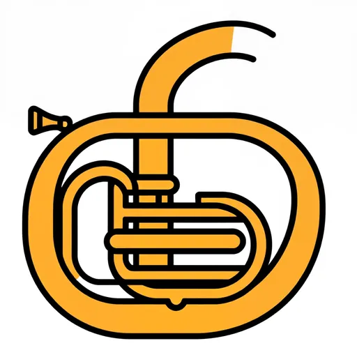
low
a sound like a big bear
k2 · paint · Qwen 1 · CLIP pct 0.07 · own word 6/6 in module
shows: a yellow French horn illustration
The picture shows a musical instrument, not a sound like a big bear, which is the definition of 'low' for this context.
qwen-1-2 arts-k-2-high-and-low-loud-and-soft/low
prompt: a tuba
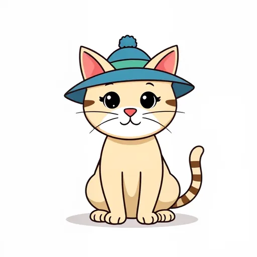
rhyme
words that end with the same sound
k2 · paint · Qwen 1 · CLIP pct 0.11 · own word 3/5 in module
shows: a cute cat wearing a hat
The picture does not show or imply any concept of rhyme or matching ending sounds.
qwen-1-2 arts-k-2-making-up-songs/rhyme
prompt: a cat wearing a hat
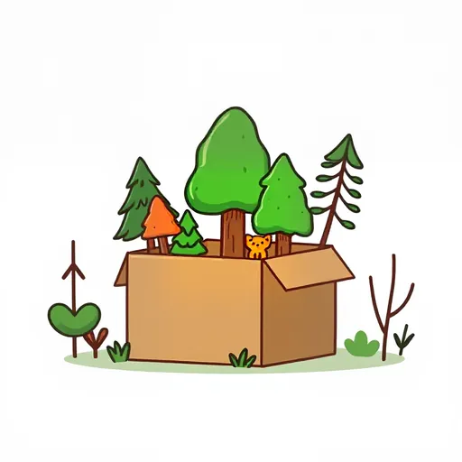
set
the small scene where the animation happens
35 · paint · Qwen 1 · CLIP pct 0.14 · own word 2/5 in module
shows: a cardboard box with trees and a small animal inside, surrounded by some plants and bare branches
The picture shows a box containing trees, which may suggest 'collection' or 'storage' rather than 'set' as a scene for animation.
qwen-1-2 arts-3-5-stop-motion-animation/set
prompt: a shoebox turned into a tiny forest scene
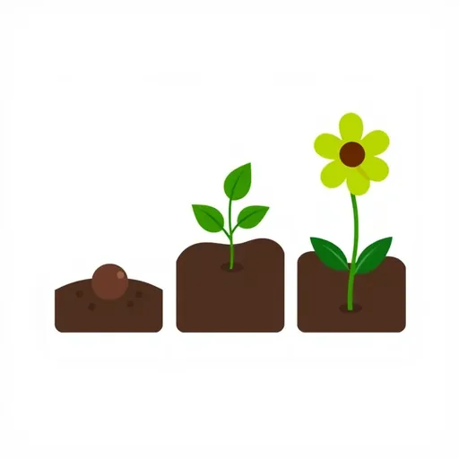
story
events told from start to end
k2 · paint · Qwen 1 · CLIP pct 0.17 · own word 3/5 in module
shows: seed growing into flower
The picture shows plant growth, not a story or sequence of events being told.
qwen-1-2 REDO in WORDWALL-PAINTINGS.md, picture not changed sincearts-k-2-picture-and-sound-stories/story
prompt: a seed, a sprout and a flower in a row

intonation
how in tune a note is
68 · paint · Qwen 1 · CLIP pct 0.25 · own word 1/6 in module
shows: a watch with a gauge showing a red and yellow zone
The picture shows a watch or gauge, which is unrelated to intonation (how in tune a note is).
qwen-1-2 arts-6-8-ensemble-skills/intonation
prompt: a clip-on tuner
memory
something you remember
k2 · paint · Qwen 1 · CLIP pct 0.30 · own word 2/5 in module
shows: a thought bubble with a birthday cake and candles
The picture shows a birthday cake, which is unrelated to the concept of memory.
qwen-1-2 REDO in WORDWALL-PAINTINGS.md, picture not changed sincearts-k-2-art-about-my-life/memory
prompt: a birthday cake with candles

short sound
a sound that is quick
k2 · svg · Qwen 1 · CLIP pct 0.31 · own word 1/6 in module
shows: a gray rectangle and an orange rectangle with a red circle around the orange one
The picture does not depict a quick sound or any concept related to speed or brevity, making it misleading for the word 'short sound'.
qwen-1-2 FIX in WORDWALL-DIAGRAMS.md, picture not changed sincearts-k-2-steady-beat-and-rhythm/short-sound
prompt: svg: a single short bar

beat
the steady pulse in music
k2 · svg · Qwen 1 · CLIP pct 0.37 · own word 1/6 in module
shows: five red hearts
The picture shows hearts, which are unrelated to the word 'beat' meaning steady pulse in music.
qwen-1-2 arts-k-2-steady-beat-and-rhythm/beat
prompt: svg: a row of evenly spaced hearts

puppet
a toy you move to act out a story
k2 · paint · Qwen 1 · CLIP pct 0.39 · own word 1/5 in module
shows: a green cartoon dragon sitting on a wooden surface
The picture shows a dragon, not a puppet, which is a toy used to act out a story.
qwen-1-2 REDO in WORDWALL-PAINTINGS.md, picture changed sincearts-k-2-puppets-and-feelings/puppet
prompt: a green sock puppet dragon

prop
an object used in a play
k2 · paint · Qwen 1 · CLIP pct 0.44 · own word 1/5 in module
shows: a wooden spoon
The picture shows a spoon, which is not a prop in the context of a play; it is a utensil, not an object used in a play.
qwen-1-2 arts-k-2-drama-in-role/prop
prompt: a wooden spoon
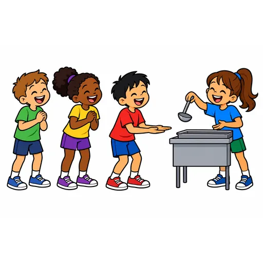
devise
to create a scene as a group without a script
68 · people · Qwen 1 · CLIP pct 0.47 · own word 1/5 in module
shows: children laughing and clapping while one serves food from a sink
The picture shows children enjoying a meal together, which is unrelated to the definition of 'devise' as creating a scene without a script.
qwen-1-2 arts-6-8-devising-a-scene/devise
prompt: people: four middle school students of about 12 with different skin tones acting out a lunch-line scene together on a cl
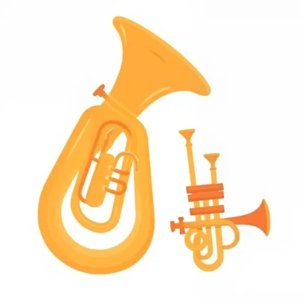
family
a group of instruments that make sound the same way
k2 · paint · Qwen 1 · CLIP pct 0.74 · own word 2/6 in module
shows: two brass instruments, a tuba and a trumpet
The picture shows musical instruments, not a family as defined by the word 'family' in the context of the card.
qwen-1-2 arts-k-2-instrument-families/family
prompt: a tuba next to a trumpet
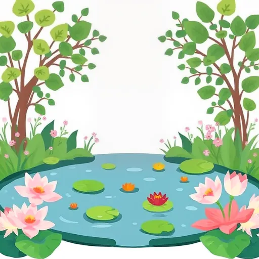
Impressionism
a style that captures light with quick, visible brushstrokes
68 · paint · Qwen 2 · CLIP pct 0.00 · own word 6/6 in module
shows: a pond with lily pads and flowers surrounded by trees
The image depicts a natural scene with water and plants, which is not directly related to Impressionism as an art style; it does not show brushstrokes or light capture.
qwen-1-2 arts-6-8-art-history-timeline/impressionism
prompt: a soft painting of a garden pond

persuade
to try to get someone to think or do something
35 · paint · Qwen 2 · CLIP pct 0.02 · own word 5/5 in module
shows: a colorful arch with glittery texture on a shelf with boxes
The image does not clearly depict persuasion or the act of trying to influence someone; it is abstract and unrelated to the meaning of 'persuade'.
qwen-1-2 REDO in WORDWALL-PAINTINGS.md, picture changed sincearts-3-5-reading-media/persuade
prompt: a toy robot in a box with bursting stars around it
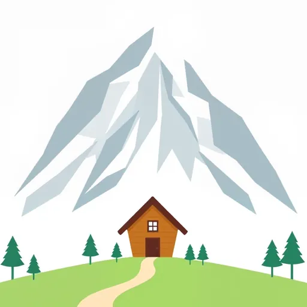
proportion
the size of parts compared to each other
68 · paint · Qwen 2 · CLIP pct 0.02 · own word 3/6 in module
shows: a mountain with a small house at its base, surrounded by trees and a path
The image does not visually represent the concept of proportion as parts compared to each other; it shows a landscape with no clear proportional relationship between elements.
qwen-1-2 arts-6-8-principles-of-design/proportion
prompt: a tiny cabin below a huge mountain
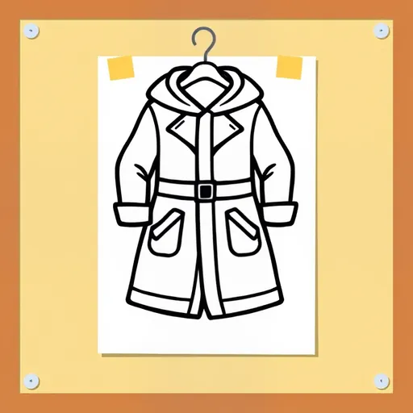
design
the planned look and sound of a show
68 · paint · Qwen 2 · CLIP pct 0.07 · own word 4/5 in module
shows: a coat on a hanger
The picture shows a coat, which is not directly related to the word 'design' as defined (planned look and sound of a show).
qwen-1-2 arts-6-8-comparing-productions/design
prompt: a costume sketch pinned to a corkboard

style
the way an artist's work looks
35 · paint · Qwen 2 · CLIP pct 0.08 · own word 2/6 in module
shows: colorful flowers with simple flat design
The picture shows a colorful, flat illustration of flowers, which does not clearly represent an artist's style or how an artist's work looks.
qwen-1-2 REDO in WORDWALL-PAINTINGS.md, picture not changed sincearts-3-5-famous-artists-and-movements/style
prompt: a bright, bold painting of flowers
soft
a quiet, gentle sound
k2 · paint · Qwen 2 · CLIP pct 0.10 · own word 1/6 in module
shows: a baby crib under a crescent moon with stars
The image depicts a calm, nighttime scene, which may evoke the idea of 'soft' through tranquility, but does not directly show or imply a 'quiet, gentle sound' as defined.
qwen-1-2 arts-k-2-high-and-low-loud-and-soft/soft
prompt: a crescent moon over a crib
notes
corrections given after a rehearsal
68 · paint · Qwen 2 · CLIP pct 0.15 · own word 1/5 in module
shows: a notebook, pencil, and stopwatch
The picture shows tools for taking notes and timing, but does not clearly indicate 'corrections given after a rehearsal'.
qwen-1-2 arts-6-8-performing-in-different-spaces/notes
prompt: a notepad with a pencil and a stopwatch
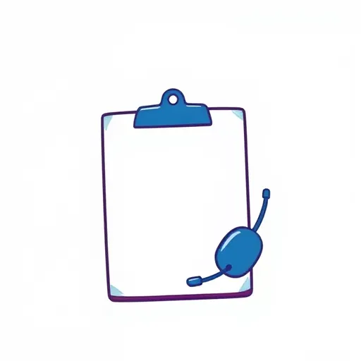
stage manager
the person who runs the show backstage
68 · paint · Qwen 2 · CLIP pct 0.17 · own word 2/6 in module
shows: clipboard with headset
The image of a clipboard with a headset does not clearly represent a stage manager, who is typically associated with backstage operations and managing a show, not office or communication tools.
qwen-1-2 arts-6-8-scripts-and-staging/stage-manager
prompt: a headset and a clipboard
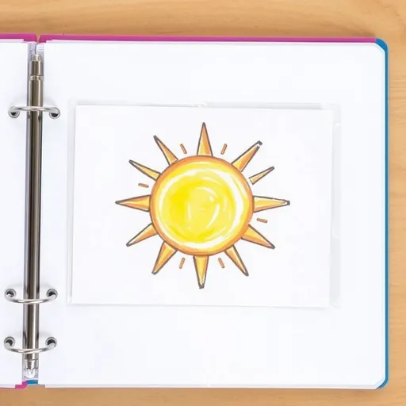
preserve
to keep something safe so it lasts
35 · paint · Qwen 2 · CLIP pct 0.23 · own word 1/5 in module
shows: a yellow sun with rays
The sun image does not clearly relate to the concept of preserving or keeping something safe; it may evoke ideas of warmth or brightness, not conservation.
qwen-1-2 REDO in WORDWALL-PAINTINGS.md, picture not changed sincearts-3-5-caring-for-and-exhibiting-art/preserve
prompt: a drawing slid into a clear plastic sleeve
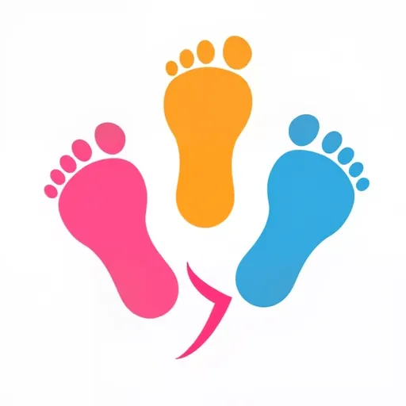
phrase
a short group of dance moves that fit together
35 · paint · Qwen 2 · CLIP pct 0.23 · own word 1/5 in module
shows: three colorful footprints in a circle with a curved arrow
The picture shows footprints and movement, which may suggest dance or steps, but does not clearly represent a 'phrase' as a short group of dance moves that fit together.
qwen-1-2 arts-3-5-dance-ideas-from-art-and-words/phrase
prompt: three footprint shapes joined by a curving arrow

prop
an object used in a play
k2 · paint · Qwen 2 · CLIP pct 0.33 · own word 1/6 in module
shows: a broom leaning against a window
The picture shows a broom, which is not typically used in a play, and does not clearly represent a 'prop' as defined in the context of theater.
qwen-1-2 arts-k-2-pretend-and-play/prop
prompt: a broom leaning on a wall

scale
the size of a work compared to its plan
68 · svg · Qwen 2 · CLIP pct 0.34 · own word 1/5 in module
shows: a small grid transforming into a larger grid with blue squares
The image does not clearly depict scaling in the context of size comparison between a plan and its actual work; it shows a simple grid transformation without indicating proportional change or plan vs. actual relationship.
qwen-1-2 arts-6-8-public-art-and-murals/scale
prompt: svg: a small gridded sketch, an arrow, a big gridded wall

cue
a line or action that signals the next event
68 · paint · Qwen 2 · CLIP pct 0.38 · own word 5/6 in module
shows: a portable light on a stand with a platform below
The image does not clearly represent a cue as a signal or trigger for an event; it depicts a lighting equipment, which is unrelated to the definition of 'cue'.
qwen-1-2 arts-6-8-scripts-and-staging/cue
prompt: a stage light

role
the part you pretend to be
k2 · paint · Qwen 2 · CLIP pct 0.41 · own word 3/5 in module
shows: an orange apron hanging on a hanger with two pockets and ties
The apron does not clearly represent the concept of 'role' as a part you pretend to be; it is more related to clothing or workwear.
qwen-1-2 arts-k-2-drama-in-role/role
prompt: a shopkeeper's apron on a hook

timing
how many frames an action takes
68 · svg · Qwen 2 · CLIP pct 0.43 · own word 2/6 in module
shows: a sequence of dots representing motion over time
The picture does not clearly indicate 'frames' or 'how many frames an action takes'.
qwen-1-2 FIX in WORDWALL-DIAGRAMS.md, picture not changed sincearts-6-8-animation-basics/timing
prompt: svg: a bouncing ball arc with spaced dots
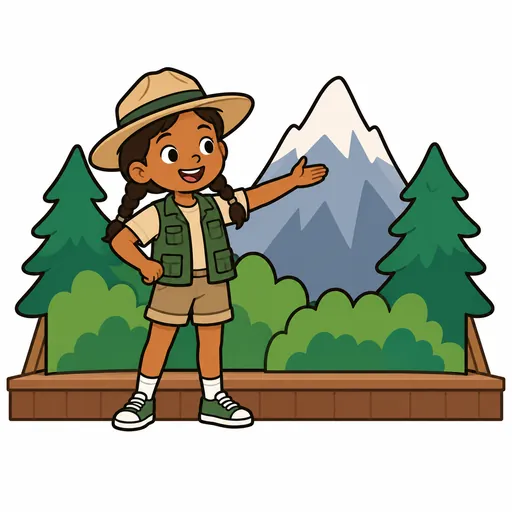
character
a person or animal in a story or play
35 · people · Qwen 2 · CLIP pct 0.45 · own word 1/5 in module
shows: a girl in outdoor gear pointing at mountains
the picture shows a real person, not a character in a story or play
qwen-1-2 arts-3-5-plays-about-our-community/character
prompt: people: a girl with medium brown skin and two braids dressed as a park ranger in a tan ranger hat and green vest, acting

frame
one still image in an animation
68 · svg · Qwen 2 · CLIP pct 0.48 · own word 3/6 in module
shows: three squares with red circles inside
The image does not clearly represent a 'frame' as a still image in animation; it shows static squares, which could be interpreted as any simple graphic or grid.
qwen-1-2 arts-6-8-animation-basics/frame
prompt: svg: a filmstrip with a ball in each box
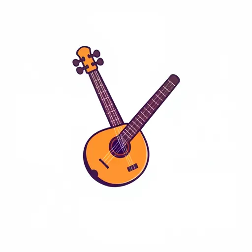
raga
a melodic framework used in Indian classical music
68 · paint · Qwen 2 · CLIP pct 0.58 · own word 1/6 in module
shows: two guitars crossed
The image depicts guitars, which are unrelated to Indian classical music or the concept of 'raga'.
qwen-1-2 arts-6-8-music-around-the-world/raga
prompt: a sitar

level
how high or low a dancer moves
35 · svg · Qwen 3 · CLIP pct 0.01 · own word 4/5 in module
shows: three bars of increasing height with stars on top
The picture shows levels or stages, but doesn't specifically convey movement or dance context, which is essential for the word 'level' as defined.
qwen-3+clip arts-3-5-dance-ideas-from-art-and-words/level
prompt: svg: three steps, low, middle and high
describe
to tell what something is like
k2 · paint · Qwen 3 · CLIP pct 0.03 · own word 1/5 in module
shows: three yellow stars in a speech bubble
The picture shows a rating or review symbol, which may be confused with 'describe' as it implies giving feedback, but doesn't clearly show the act of describing something's qualities.
qwen-3+clip arts-k-2-dances-of-many-places/describe
prompt: a speech bubble with three stars
emphasis
the part of an artwork that draws the eye first
68 · paint · Qwen 3 · CLIP pct 0.04 · own word 4/6 in module
shows: a red door with a yellow knob on a gray step
The picture shows a door, which could represent 'emphasis' as a focal point, but it doesn't clearly convey that it's the part of an artwork that draws the eye first; it's more about a physical object than an artistic element.
qwen-3+clip arts-6-8-principles-of-design/emphasis
prompt: a red door on a gray wall
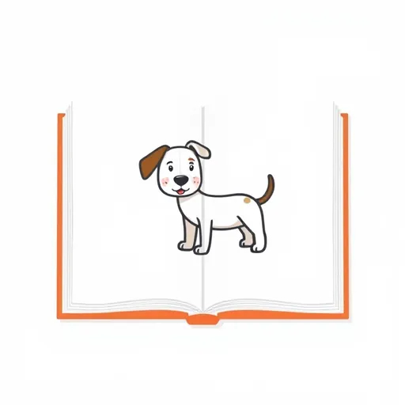
story
things that happen, told in order
k2 · paint · Qwen 3 · CLIP pct 0.06 · own word 4/5 in module
shows: a cartoon dog on a book page
The picture shows a book, which is related to stories, but the dog itself is not a story and doesn't clearly represent 'things that happen, told in order'.
qwen-3+clip arts-k-2-art-about-my-life/story
prompt: a picture book open to a drawing of a dog
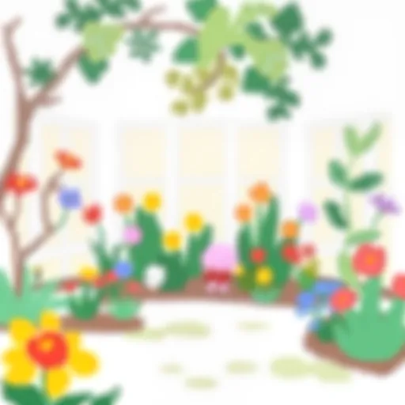
impressionism
art with quick brushstrokes and light
35 · paint · Qwen 3 · CLIP pct 0.06 · own word 5/6 in module
shows: colorful flowers, green plants, and a tree under a bright sky
The image shows a cheerful garden scene, which is visually appealing but does not clearly convey the artistic style of impressionism, such as quick brushstrokes or light effects.
qwen-3+clip arts-3-5-famous-artists-and-movements/impressionism
prompt: a blurry painting of a garden
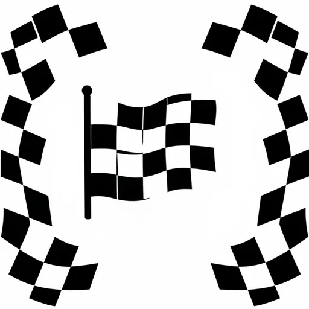
ending
the last part
k2 · paint · Qwen 3 · CLIP pct 0.10 · own word 2/5 in module
shows: a checkered flag with a wreath of checkered flags around it
The image shows a racing flag, which is associated with 'finishing' or 'race end', not the general concept of 'ending' as the last part of something. It may be related to 'ending' in a specific context, but it's not universally clear for young learners.
qwen-3+clip arts-k-2-dancing-a-feeling/ending
prompt: a checkered finish flag

canon
dancers doing the same moves one after another
68 · svg · Qwen 1 · CLIP pct 0.01 · own word 5/6 in module
shows: three rows of blue circles, orange squares, and green triangles
The picture shows geometric shapes, not dancers performing moves, so it is unrelated to the word 'canon' which refers to dancers doing the same moves one after another.
diagram-text arts-6-8-choreography/canon
prompt: svg: three staggered rows of the same shapes

dynamics
how loud or soft music is
68 · svg · Qwen 1 · CLIP pct 0.19 · own word 1/5 in module
shows: a symbol for 'less than' with letters p and f
The picture shows a mathematical symbol (less than) with letters, not related to dynamics as defined (loudness/softness of music).
diagram-text FIX in WORDWALL-DIAGRAMS.md, picture not changed sincearts-6-8-arranging-a-song/dynamics
prompt: svg: a crescendo hairpin opening from thin to wide

form
the way a piece of music is organized
35 · svg · Qwen 1 · CLIP pct 0.19 · own word 4/6 in module
shows: three squares with letters A, B, A
The picture shows a simple diagram with letters A, B, A, which does not relate to the word 'form' as defined (the way music is organized).
diagram-text arts-3-5-form-and-composition/form
prompt: svg: three blocks labeled A, B, A

lines
the words an actor says
35 · svg · Qwen 1 · CLIP pct 0.21 · own word 2/6 in module
shows: a document with highlighted lines
The picture shows lines on a document, not the words an actor says.
diagram-text arts-3-5-characters-and-scenes/lines
prompt: svg: a script page with lines highlighted

blocking
the planned moves of actors on stage
68 · svg · Qwen 1 · CLIP pct 0.27 · own word 4/5 in module
shows: a diagram of a stage with red X marks and blue dashed lines indicating movement paths
The picture depicts movement paths on a stage, which could represent blocking in theater, but the context is unclear and the diagram does not clearly convey the concept of 'blocking' as planned moves of actors on stage. The visual is too abstract and lacks explicit theatrical context.
diagram-text arts-6-8-devising-a-scene/blocking
prompt: svg: a stage floor plan with X marks joined by arrows

storyboard
drawings that plan each shot in order
35 · svg · Qwen 1 · CLIP pct 0.47 · own word 2/5 in module
shows: a grid of six numbered boxes
The picture shows a numbered grid, which is unrelated to the concept of a storyboard as drawings that plan each shot in order.
diagram-text arts-3-5-stop-motion-animation/storyboard
prompt: svg: six numbered boxes in two rows

leap
jumping over notes
35 · svg · Qwen 1 · CLIP pct 0.51 · own word 5/6 in module
shows: a musical staff with a treble clef and two notes
The picture shows musical notation, not a leap or jumping over notes.
diagram-text arts-3-5-melody-and-scales/leap
prompt: svg: two notes far apart on a staff

cadence
a chord progression that ends a phrase
912 · svg · Qwen 1 · CLIP pct 0.66 · own word 3/6 in module
shows: letter V to letter I
The image shows a simple letter transition from 'V' to 'I', which is unrelated to the definition of 'cadence' as a chord progression ending a phrase.
diagram-text arts-9-12-music-theory/cadence
prompt: svg: two chord symbols V → I

minor
a chord or key that often sounds darker or sadder
68 · svg · Qwen 1 · CLIP pct 0.86 · own word 1/6 in module
shows: a treble clef with three notes stacked vertically on the second line
The picture shows a C major chord (C-E-G), not a minor chord, and does not visually convey the 'darker or sadder' quality associated with minor chords.
diagram-text FIX in WORDWALL-DIAGRAMS.md, picture not changed sincearts-6-8-harmony-and-chords/minor
prompt: svg: a minor chord on a staff

staff
five lines where music notes are written
35 · svg · Qwen 1 · CLIP pct 0.97 · own word 2/6 in module
shows: five horizontal lines
The picture shows five lines, which is correct for a staff in music, but the word 'staff' in this context refers to a group of people or a team, not music notation. The image is misleading for the intended word.
diagram-text arts-3-5-reading-music/staff
prompt: svg: a five-line music staff

staging
where and how actors move on the stage
68 · svg · Qwen 2 · CLIP pct 0.02 · own word 5/5 in module
shows: a diagram of a stage with X marks
The picture does not clearly depict staging as movement or positioning of actors; it shows a stage with X marks that are ambiguous and not related to actor movement.
diagram-text arts-6-8-comparing-productions/staging
prompt: svg: a stage floor plan with two X marks far apart

motif
a movement that repeats and changes through a dance
68 · svg · Qwen 2 · CLIP pct 0.09 · own word 2/6 in module
shows: three spiral shapes in different sizes and colors
spirals do not clearly represent a repeating movement in dance; they are abstract and lack context for the definition provided
diagram-text FIX in WORDWALL-DIAGRAMS.md, picture not changed sincearts-6-8-choreography/motif
prompt: svg: a spiral repeated three times
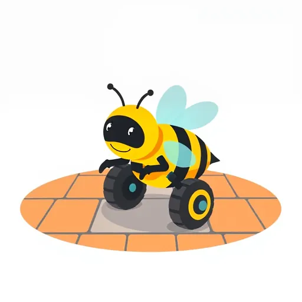
program
steps written so a computer can follow them
k2 · paint · Qwen 1 · CLIP pct 0.11 · own word 4/6 in module
shows: a cartoon bee with wheels
The picture shows a bee on wheels, which is unrelated to the concept of a program or computer instructions.
qwen-1-2 computer-science-1-code-a-path/program
prompt: a toy bee robot on a path of tiles
then
a time long ago
k2 · paint · Qwen 1 · CLIP pct 0.11 · own word 2/5 in module
shows: a vintage rotary telephone with a coiled cord
The picture shows a telephone, which is unrelated to the word 'then' meaning 'a time long ago'.
qwen-1-2 computer-science-k-2-computing-then-and-now/then
prompt: an old phone with a curly cord

log out
to sign off so no one else uses your account
k2 · svg · Qwen 1 · CLIP pct 0.14 · own word 3/6 in module
shows: a closed door with a doorknob and an arrow pointing right
The image depicts a door closing or exiting, which is not accurate for 'log out', a digital action, not a physical door.
qwen-1-2 computer-science-1-parts-of-a-computer/log-out
prompt: svg: a door with an arrow going out

training data
examples used to teach a computer model
35 · paint · Qwen 1 · CLIP pct 0.17 · own word 4/6 in module
shows: a cartoon puppy sitting on a photo card
The picture shows a puppy, which is unrelated to the concept of 'training data' in computer science.
qwen-1-2 computer-science-4-training-data-matters/training-data
prompt: a stack of photos of brown dogs
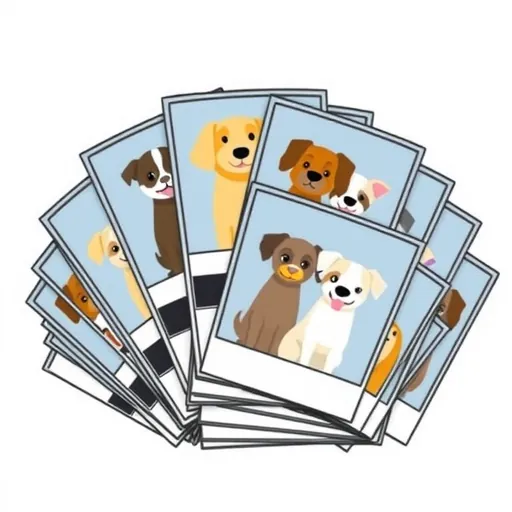
training data
examples a model learns from
68 · paint · Qwen 1 · CLIP pct 0.17 · own word 2/5 in module
shows: cartoon dogs in photo frames
The picture shows dogs, which are unrelated to the concept of 'training data' in machine learning.
qwen-1-2 REDO in WORDWALL-PAINTINGS.md, picture not changed sincecomputer-science-6-8-choosing-ai-or-not/training-data
prompt: a tall stack of photo cards

test
to run code to check that it works
35 · svg · Qwen 1 · CLIP pct 0.23 · own word 2/6 in module
shows: a blue play button and a green check mark
The picture does not show running code or testing; it shows generic symbols for play and check, which are unrelated to the technical meaning of 'test' in programming.
qwen-1-2 computer-science-5-remix-a-program/test
prompt: svg: a play button with a check
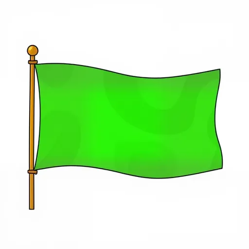
event
something that starts code
k2 · paint · Qwen 1 · CLIP pct 0.25 · own word 1/5 in module
shows: a green flag on a pole
The picture shows a flag, which is not related to the word 'event' as defined (something that starts code).
qwen-1-2 computer-science-k-2-what-the-code-does/event
prompt: a green flag

model
what the computer makes after it learns
k2 · svg · Qwen 1 · CLIP pct 0.25 · own word 4/6 in module
shows: a cat and a green checkmark on a computer screen
The picture does not show or imply anything about a computer learning or creating a model; it is unrelated to the definition of 'model' as described.
qwen-1-2 computer-science-2-teach-the-machine/model
prompt: svg: a computer screen with a cat outline and a check

data
facts and numbers we collect
k2 · svg · Qwen 1 · CLIP pct 0.33 · own word 2/5 in module
shows: sun, rain, cloud, vertical lines
The picture shows weather-related icons, not data or facts/numbers.
qwen-1-2 computer-science-k-2-asking-with-data/data
prompt: svg: a table of sun and cloud days with tally marks
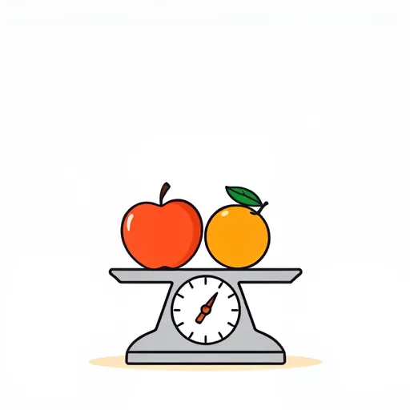
machine learning
a computer learning from examples
k2 · paint · Qwen 1 · CLIP pct 0.36 · own word 2/6 in module
shows: a black cat on a computer screen with a green checkmark, and a stack of picture cards with a cat illustration
The picture does not depict or suggest 'machine learning' as a computer learning from examples; it shows a cat and a computer screen, which is misleading for the concept.
qwen-1-2 REDO in WORDWALL-PAINTINGS.md, picture not changed sincecomputer-science-2-teach-the-machine/machine-learning
prompt: an apple and an orange on a scale

authorization
what you are allowed to do after logging in
35 · svg · Qwen 1 · CLIP pct 0.57 · own word 2/6 in module
shows: a door with a green checkmark and a doorknob
The image does not relate to the concept of authorization; it shows a door, which may imply access or entry, but does not convey the specific meaning of 'authorization' as permission after logging in.
qwen-1-2 computer-science-4-wired-wireless-and-login/authorization
prompt: svg: a door with a green check

debug
to find and fix mistakes in code
35 · svg · Qwen 1 · CLIP pct 0.63 · own word 1/6 in module
shows: a magnifying glass over a ladybug
The image does not relate to debugging code; it is a generic magnifying glass over an insect, which may suggest searching or examining, but not specifically fixing mistakes in code.
qwen-1-2 computer-science-5-remix-a-program/debug
prompt: svg: a magnifying glass over a ladybug
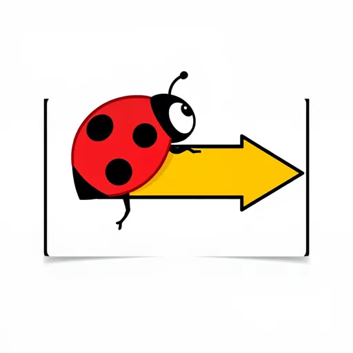
bug
a mistake in the steps
k2 · paint · Qwen 1 · CLIP pct 0.68 · own word 1/6 in module
shows: a ladybug on a yellow arrow
The picture shows a ladybug, which is an insect, not a mistake in steps.
qwen-1-2 computer-science-k-step-by-step/bug
prompt: a cartoon ladybug on an arrow card
sprite
a character in a coding program
k2 · paint · Qwen 1 · CLIP pct 0.77 · own word 1/6 in module
shows: a cartoon cat sitting in front of a computer screen
The picture shows a cat, not a sprite in a coding program.
qwen-1-2 computer-science-2-loops-and-events/sprite
prompt: a cartoon cat on a screen
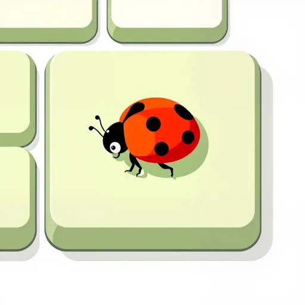
bug
a mistake in code
35 · paint · Qwen 1 · CLIP pct 0.79 · own word 1/6 in module
shows: a ladybug
The picture shows a ladybug, which is an insect, not a bug as a mistake in code.
qwen-1-2 computer-science-5-remix-a-program/bug
prompt: a ladybug on a keyboard key
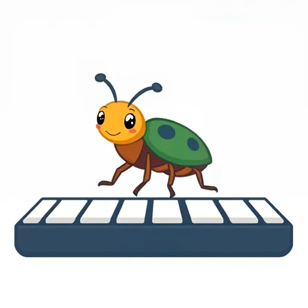
bug
a mistake in a program
35 · paint · Qwen 1 · CLIP pct 0.83 · own word 1/6 in module
shows: a cartoon bug on a keyboard
The picture shows a bug as an insect, not a mistake in a program.
qwen-1-2 computer-science-3-if-this-then-that/bug
prompt: a small cartoon beetle sitting on a keyboard
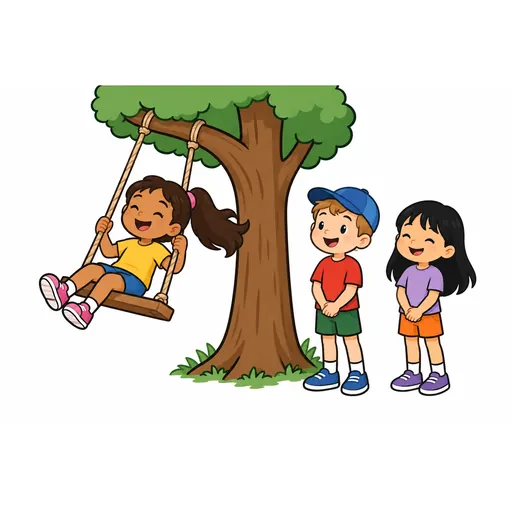
turn
your time to go
k2 · people · Qwen 2 · CLIP pct 0.01 · own word 4/5 in module
shows: children playing on a swing, two watching
The picture does not clearly show the concept of 'turn' as 'your time to go'; it depicts a swing and watching children, which could imply waiting or taking turns, but not clearly or directly.
qwen-1-2 computer-science-k-2-fair-rules-for-turns/turn
prompt: people: a girl with light brown skin swinging on a tree swing while two other children, a boy with pale skin in a cap an
careful
doing something with care so nothing breaks
k2 · paint · Qwen 2 · CLIP pct 0.03 · own word 5/5 in module
shows: laptop on a pillow
The image does not clearly convey the idea of being careful to avoid breaking something; it shows a laptop resting on a pillow, which might imply comfort or cushioning, but not necessarily care or prevention of damage.
qwen-1-2 computer-science-k-2-using-tech-well/careful
prompt: a laptop resting on a soft cushion

vary
to change or be different
35 · svg · Qwen 2 · CLIP pct 0.07 · own word 4/5 in module
shows: three numbers: 12.4, 11.9, 12.7
The numbers do not clearly show variation or change; they are numerical values without context indicating change or difference.
qwen-1-2 computer-science-3-5-why-data-varies/vary
prompt: svg: three timer displays showing different times
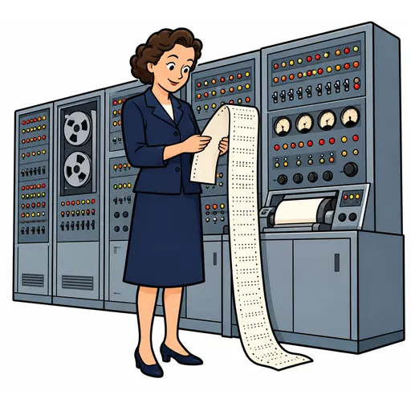
pioneer
one of the first people to work in a new field
68 · people · Qwen 2 · CLIP pct 0.08 · own word 4/5 in module
shows: a woman standing in front of large computer equipment holding a long paper tape
The image depicts a vintage computer setup, which may not clearly represent 'pioneer' as one of the first people to work in a new field; it could be interpreted as a tech worker or data operator rather than a pioneer in a field.
qwen-1-2 computer-science-6-8-computing-history-and-impact/pioneer
prompt: people: Grace Hopper, the American computer programming pioneer, as she looked in the 1950s: a white woman in her late 4
software
programs that tell a computer what to do
35 · paint · Qwen 2 · CLIP pct 0.09 · own word 1/5 in module
shows: laptop with bar graph and cloud with raindrops
The image depicts data visualization or weather, not software or computer programs.
qwen-1-2 REDO in WORDWALL-PAINTINGS.md, picture changed sincecomputer-science-3-5-computing-on-the-job/software
prompt: a laptop screen showing a rain chart
precision
how exact a measurement or value is
68 · paint · Qwen 2 · CLIP pct 0.12 · own word 2/5 in module
shows: a house with a location pin on top
The image does not visually represent the concept of precision, which relates to exactness in measurement or value.
qwen-1-2 computer-science-6-8-data-metadata-and-you/precision
prompt: a map pin on a single rooftop
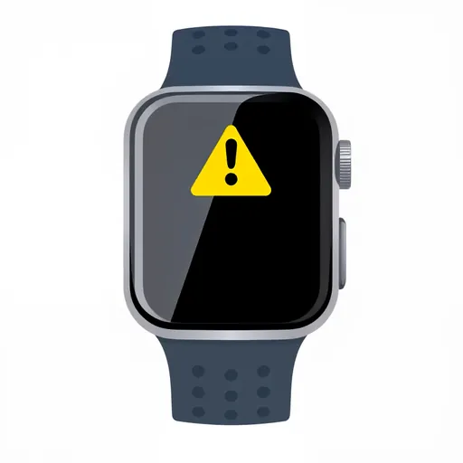
risk
a chance that something bad could happen
35 · paint · Qwen 2 · CLIP pct 0.15 · own word 1/5 in module
shows: a smartwatch with a warning symbol on its screen
The image shows a warning or alert, which may imply danger or caution, but does not clearly convey the concept of 'risk' as a chance of something bad happening.
qwen-1-2 computer-science-3-5-new-tech-yes-or-no/risk
prompt: a smart watch with a yellow warning sign
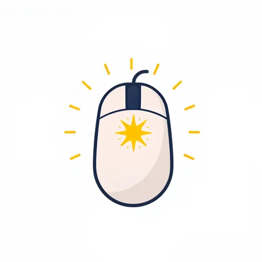
event
something that makes code start
35 · paint · Qwen 2 · CLIP pct 0.16 · own word 1/5 in module
shows: a computer mouse with a starburst effect
The image of a mouse with a starburst does not clearly represent the concept of 'event' in coding, which refers to something that triggers code execution. The mouse is a tool, not a representation of an event.
qwen-1-2 computer-science-3-5-plan-it-before-you-code-it/event
prompt: a computer mouse with a starburst

confidence
how sure a model is about its guess
35 · svg · Qwen 2 · CLIP pct 0.16 · own word 1/6 in module
shows: green progress bar at 90%
The image shows a progress bar, which may imply completion or achievement, but does not clearly represent the concept of confidence as 'how sure a model is about its guess'.
qwen-1-2 computer-science-5-train-a-classifier/confidence
prompt: svg: a meter at 90 percent

accessible
easy for everyone to use, including people with disabilities
35 · paint · Qwen 2 · CLIP pct 0.25 · own word 1/6 in module
shows: a video player with a play button
The image of a video player does not clearly convey accessibility for people with disabilities; it could represent any media player, not specifically accessibility.
qwen-1-2 REDO in WORDWALL-PAINTINGS.md, picture not changed sincecomputer-science-5-human-centered-design/accessible
prompt: a video player with captions on

test data
new examples used to check a model
35 · paint · Qwen 2 · CLIP pct 0.26 · own word 2/6 in module
shows: a simple flat illustration of mountains against a light blue sky
The picture does not visually represent 'test data' or the concept of checking a model with new examples; it is unrelated to the definition provided.
qwen-1-2 computer-science-5-train-a-classifier/test-data
prompt: a fresh stack of unlabeled photos

step
one thing to do
k2 · svg · Qwen 2 · CLIP pct 0.32 · own word 4/5 in module
shows: a blue arrow pointing right
The arrow does not clearly represent 'step' as one thing to do; it may imply direction or movement but lacks context for the word's meaning.
qwen-1-2 computer-science-k-2-what-the-code-does/step
prompt: svg: one arrow pointing right

compare
to look at how things are alike and different
35 · paint · Qwen 2 · CLIP pct 0.36 · own word 2/5 in module
shows: two diagrams with colored boxes and arrows showing relationships between items
The diagrams do not clearly depict the concept of comparing things that are alike and different; they appear more like flowcharts or organizational structures rather than visual representations of comparison.
qwen-1-2 computer-science-3-5-algorithms-that-help-some-more/compare
prompt: two flowcharts side by side

digital footprint
the trail you leave online
k2 · svg · Qwen 2 · CLIP pct 0.37 · own word 1/6 in module
shows: a dot matrix representation of a footprint with a head and body
The image is abstract and does not clearly convey the concept of an online trail or digital footprint.
qwen-1-2 computer-science-2-input-and-output/digital-footprint
prompt: svg: a footprint made of tiny dots
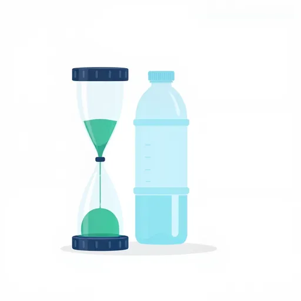
break
a short rest
k2 · paint · Qwen 2 · CLIP pct 0.39 · own word 1/5 in module
shows: an hourglass and a water bottle
The image does not clearly depict a short rest; it shows time passing and a container of water, which are not directly related to the concept of a break as a rest.
qwen-1-2 computer-science-k-2-using-tech-well/break
prompt: a sand timer beside a water bottle

condition
a question the computer checks: true or false
35 · paint · Qwen 2 · CLIP pct 0.39 · own word 1/6 in module
shows: a cloud raining and a question mark
The image does not clearly represent the word 'condition' which refers to a state or circumstance; it may suggest 'weather' or 'question' instead.
qwen-1-2 computer-science-3-if-this-then-that/condition
prompt: a rain cloud next to a big question mark

comment
a note in code that the computer skips
35 · svg · Qwen 2 · CLIP pct 0.40 · own word 3/6 in module
shows: a diagram with code-like elements and a rotation arrow
The image does not clearly depict a comment in code or its function; it appears abstract and lacks explicit coding context.
qwen-1-2 FIX in WORDWALL-DIAGRAMS.md, picture not changed sincecomputer-science-4-trace-the-code/comment
prompt: svg: a line of code with a gray note beside it

algorithmic bias
unfair results built into an algorithm
68 · svg · Qwen 2 · CLIP pct 0.49 · own word 2/6 in module
shows: flowchart with decision point and balance scale with unequal weights
The image does not clearly represent 'algorithmic bias' as unfair results built into an algorithm; it shows a general decision-making process and a balance scale, which may imply fairness or comparison but lacks specific connection to algorithms or bias.
qwen-1-2 FIX in WORDWALL-DIAGRAMS.md, picture not changed sincecomputer-science-6-8-algorithms-and-fairness/algorithmic-bias
prompt: svg: a tilted scale beside a flowchart

trace
to follow code step by step
35 · svg · Qwen 2 · CLIP pct 0.62 · own word 1/6 in module
shows: a diagram with colored lines and arrows indicating steps
the diagram does not clearly show code or step-by-step following, and the term 'trace' is not explicitly represented
qwen-1-2 FIX in WORDWALL-DIAGRAMS.md, picture not changed sincecomputer-science-4-trace-the-code/trace
prompt: svg: an arrow moving down lines of code
test
a check that code does what it should
68 · paint · Qwen 2 · CLIP pct 0.62 · own word 1/5 in module
shows: a checklist with two red Xs and two unchecked boxes
The image shows a checklist with some items marked with Xs and others unchecked, which may imply failure or incomplete tasks, but does not clearly represent a 'test' as a check that code does what it should.
qwen-1-2 computer-science-6-8-code-you-did-not-write/test
prompt: a checklist with one red X

granularity
how much detail data includes
68 · svg · Qwen 2 · CLIP pct 0.71 · own word 1/5 in module
shows: two grids with shaded squares, one 3x3 and one 10x10, showing varying levels of shading
The picture shows visual representation of detail levels but does not clearly convey the concept of 'granularity' as 'how much detail data includes'.
qwen-1-2 computer-science-6-8-data-metadata-and-you/granularity
prompt: svg: a coarse grid beside a fine grid
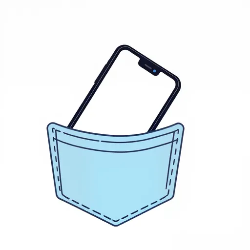
now
this time today
k2 · paint · Qwen 3 · CLIP pct 0.00 · own word 3/5 in module
shows: a phone in a pocket
The image does not clearly convey the concept of 'now' (this time today); it shows a phone in a pocket, which could represent any time or context, not specifically 'now'.
qwen-3+clip computer-science-k-2-computing-then-and-now/now
prompt: a smartphone in a jeans pocket

least
the smallest number
k2 · svg · Qwen 3 · CLIP pct 0.01 · own word 6/6 in module
shows: three columns of colored squares, one with blue, one with orange, one with green and a star
The picture shows different colors and a star, which doesn't clearly represent 'least' as the smallest number; it might imply 'most' or 'favorite' due to the star.
qwen-3+clip computer-science-k-count-and-decide/least
prompt: svg: three stacks of blocks with the shortest one starred

output
what a computer gives back
k2 · paint · Qwen 3 · CLIP pct 0.10 · own word 2/6 in module
shows: a speaker emitting sound waves
The picture shows a speaker, which is an output device, but it doesn't specifically convey the idea of a computer giving back information or data, which is the core meaning of 'output' in this context.
qwen-3+clip computer-science-2-input-and-output/output
prompt: a speaker with sound waves

training set
the data used to teach a model
68 · svg · Qwen 1 · CLIP pct 0.03 · own word 3/6 in module
shows: stack of colored rectangles with icons: sun, cat, car
The picture shows no relation to 'training set' or machine learning concepts.
diagram-text computer-science-6-8-machine-learning-models/training-set
prompt: svg: a stack of photo cards

variable
a named box that stores a value that can change
35 · svg · Qwen 1 · CLIP pct 0.04 · own word 5/6 in module
shows: a blue number 7 in an orange box with the word 'score' below
The picture does not show a named box that stores a value that can change; it shows a static score, which is not representative of a variable.
diagram-text computer-science-3-variables-in-programs/variable
prompt: svg: a box labeled score holding the number 7

variable
a named place to store a value that can change
68 · svg · Qwen 1 · CLIP pct 0.06 · own word 3/6 in module
shows: a number 7 in a box with the word 'age' below
The picture shows a number and the word 'age', which is unrelated to the concept of a variable as a named place to store a value that can change.
diagram-text computer-science-6-8-variables-data-types-and-procedures/variable
prompt: svg: a labeled box holding a value

value
the information stored in a variable
35 · svg · Qwen 1 · CLIP pct 0.13 · own word 4/6 in module
shows: a blue number 5 inside an orange-bordered square
The picture shows a number, not a variable or code diagram, and does not relate to the concept of 'value' as defined in the context of programming.
diagram-text computer-science-4-trace-the-code/value
prompt: svg: a box with the number 5

variable
a named box that stores a value
35 · svg · Qwen 1 · CLIP pct 0.19 · own word 3/6 in module
shows: a box with the number 0 and the word 'score'
The picture shows a score box, not a variable as defined by the word 'variable' (a named box that stores a value).
diagram-text computer-science-4-trace-the-code/variable
prompt: svg: a box labeled score holding 0

mistake
something that is not right
k2 · svg · Qwen 1 · CLIP pct 0.27 · own word 2/6 in module
shows:
diagram-text computer-science-1-what-is-ai/mistake
prompt: svg: a red X on a picture card

data
information a computer uses
k2 · svg · Qwen 1 · CLIP pct 0.27 · own word 1/6 in module
shows: a simple diagram drawn in code
The picture is not a visual representation of 'data' as information a computer uses; it appears to be a code diagram, which is misleading for a K-2 audience.
diagram-text computer-science-1-what-is-ai/data
prompt: svg: a stack of small picture cards

data
examples the computer learns from
k2 · svg · Qwen 1 · CLIP pct 0.30 · own word 2/6 in module
shows: five stacked cards with animal faces peeking out
The picture shows animals, not data or computer learning examples.
diagram-text computer-science-2-teach-the-machine/data
prompt: svg: a big stack of picture cards

data
information we collect, like counts
k2 · svg · Qwen 1 · CLIP pct 0.45 · own word 4/6 in module
shows: a table with animals and tally marks
The picture shows animals with tally marks, not the word 'data' or its meaning of collected information.
diagram-text computer-science-k-count-and-decide/data
prompt: svg: a tally chart with three rows

value
a number or word that is saved
k2 · svg · Qwen 1 · CLIP pct 0.47 · own word 1/5 in module
shows: a number 5 in a blue bordered square
The picture shows a number, not the concept of 'value' as saved or preserved.
diagram-text computer-science-k-2-signs-and-changing-values/value
prompt: svg: a box holding the number 5

variable
a named place that stores a value
35 · svg · Qwen 1 · CLIP pct 0.49 · own word 3/5 in module
shows: a black zero in a beige square with an orange border
The picture shows the number zero, which is unrelated to the concept of a variable in programming or mathematics.
diagram-text computer-science-3-5-plan-it-before-you-code-it/variable
prompt: svg: a box holding the number 0

dataset
a collection of related data
68 · svg · Qwen 1 · CLIP pct 0.49 · own word 4/6 in module
shows: empty table with rows and columns labeled A, B, C and numbers 1-4
The picture shows an empty table structure, which is not a dataset. A dataset implies organized data, but this image lacks any data or indication of relationships.
diagram-text computer-science-6-8-data-detectives/dataset
prompt: svg: a spreadsheet grid

limitation
a weakness that limits what data can show
68 · svg · Qwen 1 · CLIP pct 0.52 · own word 3/5 in module
shows: a single house in a grid with one cell revealed, others as question marks
The picture shows a house, which is unrelated to the concept of 'limitation' in data context.
diagram-text CODE in WORDWALL-PAINTINGS.md, picture not changed sincecomputer-science-6-8-cleaning-data-honestly/limitation
prompt: svg: a town where only one school's area was surveyed; the rest has no data

value
the number or word stored in a variable
35 · svg · Qwen 1 · CLIP pct 0.58 · own word 2/6 in module
shows: number 10 pointing to a dashed box
The picture does not show or imply the concept of 'value' in programming, which refers to the number or word stored in a variable. It is misleading as it shows a static number, not a variable's stored value.
diagram-text computer-science-3-variables-in-programs/value
prompt: svg: the number 10 dropping into a box

train
to teach a computer with examples
k2 · svg · Qwen 1 · CLIP pct 0.84 · own word 1/6 in module
shows: stack of cat icons leading to a computer monitor
The picture depicts cats and a computer monitor, which are unrelated to the definition of 'train' as teaching a computer with examples. The visual does not convey the concept of training a computer.
diagram-text computer-science-2-teach-the-machine/train
prompt: svg: a stack of cat picture cards going into a computer

feature
a measurable trait a model uses
68 · svg · Qwen 2 · CLIP pct 0.02 · own word 3/6 in module
shows: a simple bird with an orange wing and tail
The picture does not depict a measurable trait or model, so it is not relevant to the word 'feature' as defined.
diagram-text computer-science-6-8-machine-learning-models/feature
prompt: svg: a bird outline with the wing highlighted
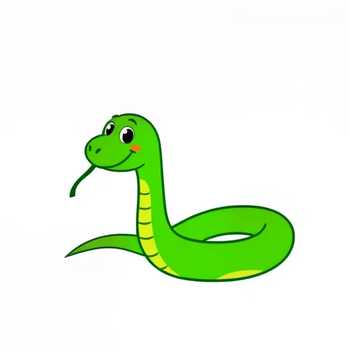
sound
what you hear when you say a letter
k2 · paint · Qwen 1 · CLIP pct 0.02 · own word 6/6 in module
shows: a green cartoon snake
The picture shows a snake, which is unrelated to the word 'sound' as defined for early learners.
qwen-1-2 REDO in WORDWALL-PAINTINGS.md, picture not changed sinceela-k-rhymes-and-sounds/sound
prompt: a bright sun with sound waves around it

panel
one box in a comic
35 · svg · Qwen 1 · CLIP pct 0.02 · own word 5/5 in module
shows: sun, speech bubble, star
The picture shows unrelated icons (sun, speech bubble, star) that do not represent a comic panel.
qwen-1-2 ela-3-5-pictures-panels-and-performances/panel
prompt: svg: a comic page with three panels in a row

third person limited
told by an outside narrator who knows one character's thoughts
68 · svg · Qwen 1 · CLIP pct 0.04 · own word 3/6 in module
shows: three people under a spotlight, one in orange, two in gray
The image does not depict a narrator or perspective; it shows people, which is unrelated to 'third person limited' narration.
qwen-1-2 ela-6-point-of-view/third-person-limited
prompt: svg: a spotlight on one figure of three

long vowel
a vowel that says its own name
k2 · paint · Qwen 1 · CLIP pct 0.06 · own word 3/6 in module
shows: birthday cake with candles
The picture shows a birthday cake, which is unrelated to the concept of 'long vowel'.
qwen-1-2 ela-1-phonics-blends-and-digraphs/long-vowel
prompt: a birthday cake

pun
a joke that plays on a word with two meanings
68 · paint · Qwen 1 · CLIP pct 0.06 · own word 1/5 in module
shows: a loaf of bread and a dollar coin
The image does not relate to the word 'pun' or its definition of a joke playing on a word with two meanings.
qwen-1-2 ela-8-puns-irony-and-allusion/pun
prompt: a loaf of bread beside a coin

topic
the subject a text is about, in a word or two
35 · paint · Qwen 1 · CLIP pct 0.06 · own word 2/6 in module
shows: a honeycomb with honey dripping
The image depicts honeycomb, which is unrelated to the word 'topic' meaning the subject of a text.
qwen-1-2 ela-3-main-idea-and-key-details/topic
prompt: a honeycomb dripping with honey
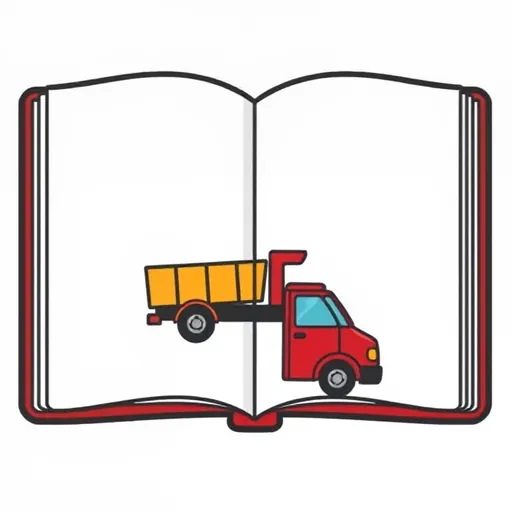
cover
the outside of a book
k2 · paint · Qwen 1 · CLIP pct 0.08 · own word 4/6 in module
shows: a red truck carrying orange cargo
The picture shows a truck, not a book cover, so it is incorrect for the word 'cover' as defined.
qwen-1-2 REDO in WORDWALL-PAINTINGS.md, picture not changed sinceela-k-all-about-books/cover
prompt: a closed book with a red truck on the front

denotation
the dictionary meaning of a word
68 · paint · Qwen 1 · CLIP pct 0.08 · own word 1/6 in module
shows: a simple illustration of a house with a red roof, windows, door, and bushes
The picture shows a house, which is unrelated to the concept of denotation, which refers to dictionary meaning.
qwen-1-2 ela-6-connotation-and-context/denotation
prompt: a house
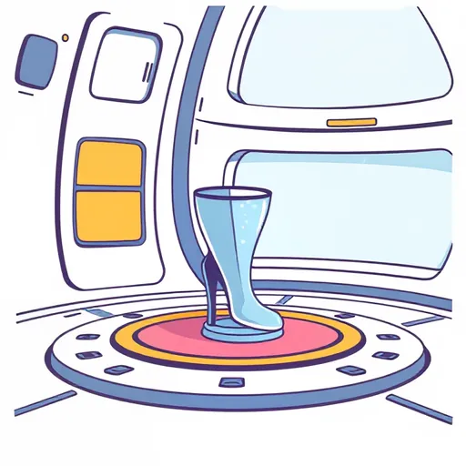
retelling
a new version of an old story
68 · paint · Qwen 1 · CLIP pct 0.09 · own word 3/6 in module
shows: a high-heeled boot on a circular platform inside a futuristic room
The image does not relate to retelling; it shows a surreal or sci-fi scene with no connection to storytelling or narrative revision.
qwen-1-2 ela-8-modern-takes-on-classic-stories/retelling
prompt: a glass slipper on a spaceship floor

topic
what your writing is about
k2 · paint · Qwen 1 · CLIP pct 0.10 · own word 1/6 in module
shows: a cartoon shark with a smiling face
The picture does not relate to the word 'topic' which refers to the subject of writing.
qwen-1-2 ela-1-writing-sentences-and-stories/topic
prompt: a shark swimming

fact
a statement that can be proven
68 · paint · Qwen 1 · CLIP pct 0.10 · own word 6/6 in module
shows: a red suspension bridge
The picture shows a bridge, which is unrelated to the definition of 'fact' as a provable statement.
qwen-1-2 ela-8-conflicting-information/fact
prompt: a large suspension bridge

reason
why the author thinks something
k2 · paint · Qwen 1 · CLIP pct 0.11 · own word 4/5 in module
shows: a green tree on a grassy hill
The picture does not show or suggest the concept of 'reason' or why an author thinks something.
qwen-1-2 ela-k-2-reasons-an-author-gives/reason
prompt: a tree casting a shadow on grass

meaning
what a word says
k2 · paint · Qwen 1 · CLIP pct 0.12 · own word 3/5 in module
shows: an elephant and two small mice
The picture shows animals, not the concept of 'meaning' or what a word says.
qwen-1-2 ela-k-2-new-words-from-read-alouds/meaning
prompt: a big elephant beside a tiny mouse

participle
a verb form used as an adjective
68 · paint · Qwen 1 · CLIP pct 0.13 · own word 2/6 in module
shows: a cracked vase with a piece broken off
The image depicts a broken object, which is unrelated to the concept of a participle, a verb form used as an adjective.
qwen-1-2 ela-8-verbals-and-voice/participle
prompt: a broken vase

fact
something that is true
k2 · paint · Qwen 1 · CLIP pct 0.14 · own word 5/6 in module
shows: a goldfish in a bowl of water
The picture does not relate to the word 'fact' which means something that is true.
qwen-1-2 ela-k-draw-tell-and-write/fact
prompt: a fish in a bowl of water
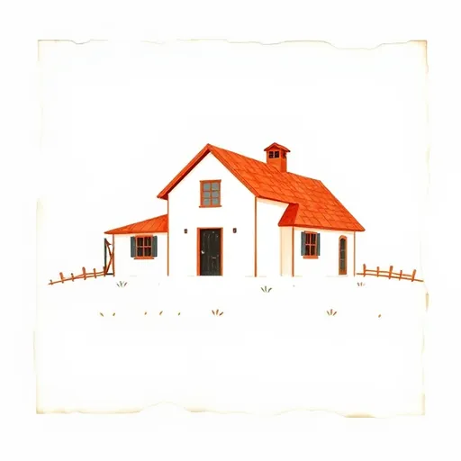
flashback
a scene from an earlier time
68 · paint · Qwen 1 · CLIP pct 0.14 · own word 5/6 in module
shows: a simple white house with a red roof and fence
the picture does not depict a flashback or any scene from an earlier time; it shows a static, present-day house
qwen-1-2 ela-8-narrative-techniques/flashback
prompt: a faded photograph
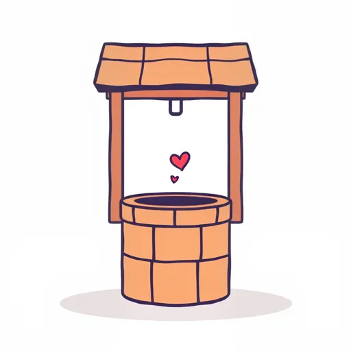
subjunctive mood
a verb form for wishes or what is not real
68 · paint · Qwen 1 · CLIP pct 0.19 · own word 1/6 in module
shows: a well with a heart floating above it
The image does not relate to the subjunctive mood; it depicts a well and a heart, which are unrelated to the grammatical concept of subjunctive mood.
qwen-1-2 ela-8-verbals-and-voice/subjunctive-mood
prompt: a wishing well

plagiarism
presenting someone else's work as your own
68 · svg · Qwen 1 · CLIP pct 0.19 · own word 3/6 in module
shows: two overlapping rectangles with a red X
The image does not clearly represent plagiarism; it may suggest deletion or cancellation, not the act of copying someone else's work.
qwen-1-2 ela-6-research-and-citing-sources/plagiarism
prompt: svg: a copy icon with a red X

topic
what a book is all about
k2 · paint · Qwen 1 · CLIP pct 0.19 · own word 2/6 in module
shows: a green frog sitting on a lily pad
The picture shows a frog, which is unrelated to the word 'topic' meaning 'what a book is all about'.
qwen-1-2 ela-k-all-about-books/topic
prompt: a frog on a lily pad

key detail
an important part
k2 · paint · Qwen 1 · CLIP pct 0.23 · own word 3/5 in module
shows: a jar of honey, a honeycomb, and a honey dipper
The picture shows honey-related items, not key details or important parts of a text.
qwen-1-2 REDO in WORDWALL-PAINTINGS.md, picture changed sinceela-k-2-listening-and-asking-questions/key-detail
prompt: a jar of honey
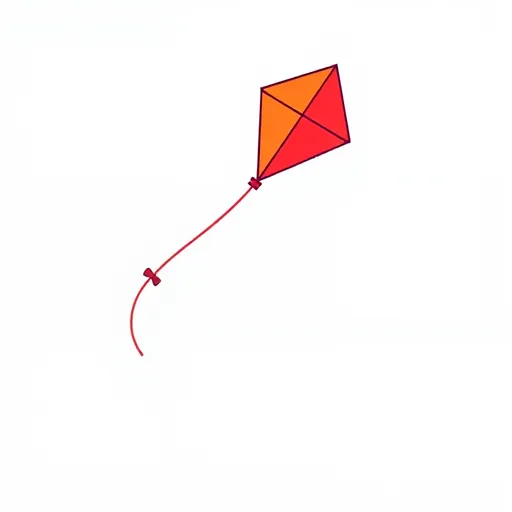
ending
how the problem is solved
k2 · paint · Qwen 1 · CLIP pct 0.24 · own word 1/6 in module
shows: a red and orange kite with a string
The picture shows a kite, which is unrelated to the word 'ending' as defined (how the problem is solved).
qwen-1-2 ela-2-story-structure-and-point-of-view/ending
prompt: a kite flying free in the sky

main topic
what a whole text is about
k2 · paint · Qwen 1 · CLIP pct 0.25 · own word 5/6 in module
shows: a green frog sitting on a log
The picture does not relate to the concept of 'main topic' as it shows no text or context to indicate what a whole text is about.
qwen-1-2 ela-2-main-idea-and-connections/main-topic
prompt: a frog on a log

inform
to teach facts
k2 · paint · Qwen 1 · CLIP pct 0.26 · own word 2/6 in module
shows: a bat hanging upside down
The picture shows a bat, which is unrelated to the word 'inform' meaning to teach facts.
qwen-1-2 ela-2-author-s-purpose/inform
prompt: a bat hanging upside down
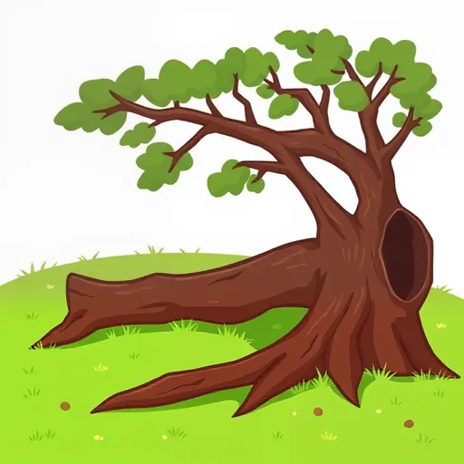
effect
what happens because of something
k2 · paint · Qwen 1 · CLIP pct 0.29 · own word 2/6 in module
shows: a tree with a large hollow trunk and green leaves
The picture does not show any cause-and-effect relationship; it depicts a tree, which is unrelated to the definition of 'effect' as 'what happens because of something'.
qwen-1-2 ela-2-main-idea-and-connections/effect
prompt: a fallen tree on grass

digraph
two letters that make one new sound
k2 · paint · Qwen 1 · CLIP pct 0.30 · own word 2/6 in module
shows: a wooden sailboat with white sails and red flags on water
The picture shows a sailboat, which is unrelated to the concept of a digraph (two letters making one sound).
qwen-1-2 ela-1-phonics-blends-and-digraphs/digraph
prompt: a sailing ship
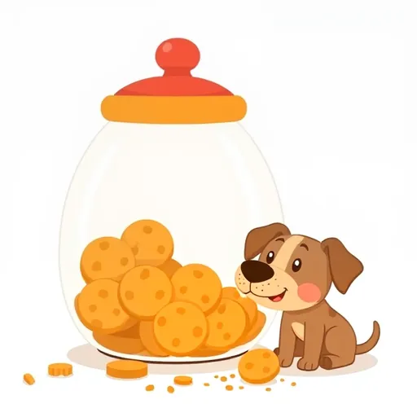
implicit
suggested, not stated directly
35 · paint · Qwen 1 · CLIP pct 0.38 · own word 1/6 in module
shows: a puppy next to a jar of cookies with some cookies spilled out
The picture shows a puppy and cookies, which is unrelated to the concept of 'implicit' (suggested, not stated directly).
qwen-1-2 REDO in WORDWALL-PAINTINGS.md, picture not changed sinceela-5-quoting-and-inferring/implicit
prompt: a shaking teacup on a saucer

meter
the rhythm of stressed and unstressed syllables
68 · svg · Qwen 1 · CLIP pct 0.40 · own word 2/6 in module
shows: blue circles and orange rectangles in a pattern
The picture does not represent the rhythm of stressed and unstressed syllables; it shows a visual pattern unrelated to meter in poetry.
qwen-1-2 ela-7-sound-and-form-in-poetry/meter
prompt: svg: a pattern of short and long marks

complete sentence
a sentence with a whole idea
k2 · svg · Qwen 1 · CLIP pct 0.59 · own word 1/5 in module
shows: a red rectangle followed by four blue rectangles and a black dot
The image does not depict a complete sentence or convey the concept of a whole idea; it appears to be a random sequence of shapes with no semantic connection to the word 'complete sentence'.
qwen-1-2 ela-k-2-show-and-tell/complete-sentence
prompt: svg: a full word strip ending with a dot

period
a dot at the end of a telling sentence
k2 · svg · Qwen 1 · CLIP pct 0.88 · own word 1/5 in module
shows: a solid black circle
The picture does not show a dot at the end of a sentence, which is the definition of 'period'.
qwen-1-2 ela-k-2-adding-details-and-fixing-sentences/period
prompt: svg: a large black dot
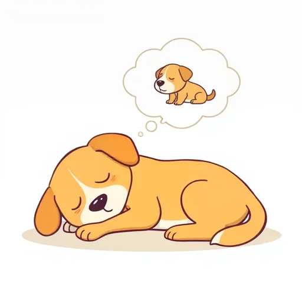
flashback
a scene that jumps back in time
35 · paint · Qwen 2 · CLIP pct 0.01 · own word 4/6 in module
shows: a sleeping dog with a thought bubble showing a puppy
The picture shows a dream or memory, not a flashback as defined by the word, it lacks the temporal 'jump back in time' element and is more about imagination or nostalgia than a narrative flashback.
qwen-1-2 REDO in WORDWALL-PAINTINGS.md, picture not changed sinceela-5-narrative-craft/flashback
prompt: an old photo with curled edges
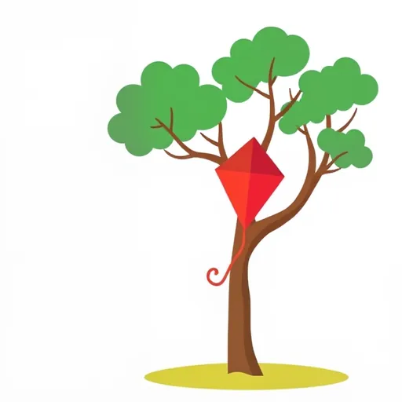
middle
where the problem happens
k2 · paint · Qwen 2 · CLIP pct 0.01 · own word 6/6 in module
shows: a tree with a red kite stuck in the branches
The picture does not clearly show 'middle' as the location where the problem happens; it shows a kite stuck in a tree, which could be interpreted as 'top' or 'center' but not specifically 'middle' in the context of a problem.
qwen-1-2 ela-2-story-structure-and-point-of-view/middle
prompt: a kite stuck in a tree

interpretation
an explanation of what facts mean
68 · paint · Qwen 2 · CLIP pct 0.01 · own word 4/6 in module
shows: map with pins and symbols
The picture shows a map with markers but does not clearly depict the concept of 'interpretation' as an explanation of what facts mean.
qwen-1-2 ela-8-conflicting-information/interpretation
prompt: an old map with notes

fact
something that is true and can be proven
35 · paint · Qwen 2 · CLIP pct 0.03 · own word 5/6 in module
shows: an ice cube and a thermometer showing cold temperatures
The image depicts cold, not a fact or truth, which is the definition of 'fact'.
qwen-1-2 ela-3-opinion-and-informative-writing/fact
prompt: a thermometer next to an ice cube
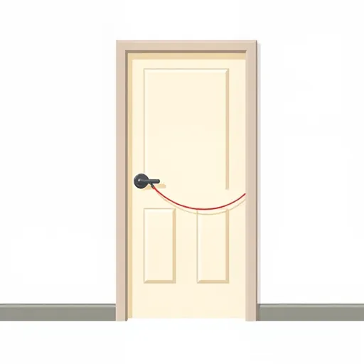
dramatic irony
when the audience knows something a character does not
68 · paint · Qwen 2 · CLIP pct 0.03 · own word 4/6 in module
shows: a door with a red rope tied to the handle
The image does not clearly convey the concept of dramatic irony, which involves audience knowledge versus character knowledge.
qwen-1-2 ela-8-dialogue-and-dramatic-irony/dramatic-irony
prompt: a door with a hidden trip wire
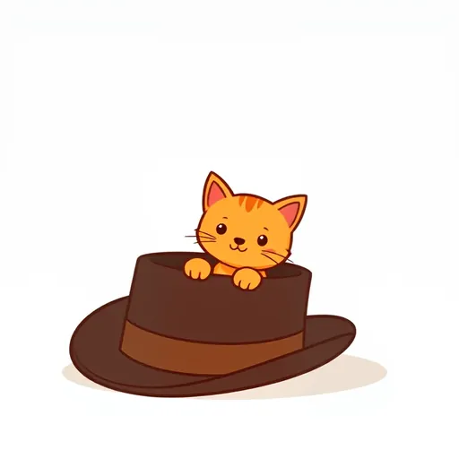
rhyme
words that end with the same sound
k2 · paint · Qwen 2 · CLIP pct 0.04 · own word 5/6 in module
shows: a kitten peeking out of a hat
The image does not visually represent the concept of rhyming words; it is unrelated to the definition provided.
qwen-1-2 ela-k-rhymes-and-sounds/rhyme
prompt: a cat sitting in a hat

claim
the position the writer argues
68 · svg · Qwen 2 · CLIP pct 0.04 · own word 5/6 in module
shows: a red flag on a green hill
The image does not clearly represent a 'claim' as a position the writer argues; it is a generic flag on a hill, which could represent many concepts.
qwen-1-2 ela-6-tracing-an-argument/claim
prompt: svg: a flag on a hill
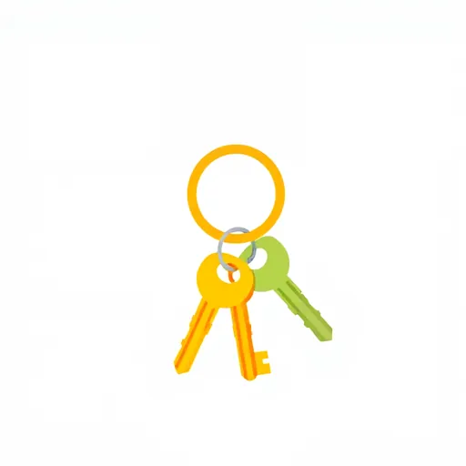
comic relief
a funny moment that eases tension
68 · paint · Qwen 2 · CLIP pct 0.04 · own word 4/6 in module
shows: a banana peel under a spotlight
The image depicts a banana peel, which is a common source of humor or slapstick, but does not clearly convey the concept of 'comic relief' as a moment that eases tension; it might be misinterpreted as a fall or accident rather than a comedic break.
qwen-1-2 REDO in WORDWALL-PAINTINGS.md, picture not changed sinceela-8-dialogue-and-dramatic-irony/comic-relief
prompt: a dropped ring of keys

hero
the brave main character of a myth
35 · paint · Qwen 2 · CLIP pct 0.05 · own word 2/6 in module
shows: a wooden sailing ship with flags
The picture shows a ship, not a hero or a myth character; it does not clearly represent bravery or a main character from a myth.
qwen-1-2 ela-4-myths-and-allusions/hero
prompt: a Greek sailing ship
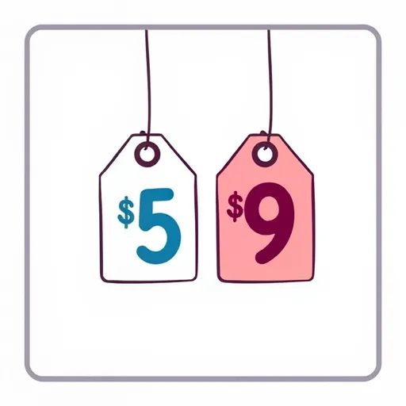
conflicting
disagreeing with each other
68 · paint · Qwen 2 · CLIP pct 0.05 · own word 4/6 in module
shows: two price tags with $5 and $9
The picture shows prices, which is unrelated to the concept of 'conflicting' (disagreeing with each other).
qwen-1-2 ela-8-conflicting-information/conflicting
prompt: two different price tags on one item

main idea
what a text is mostly about
35 · paint · Qwen 2 · CLIP pct 0.06 · own word 4/5 in module
shows: a bat flying over tall grass
The image does not clearly represent the concept of 'main idea' as it lacks textual context or visual cues indicating a central theme or focus.
qwen-1-2 ela-3-5-main-idea-with-text-evidence/main-idea
prompt: a bat flying over a cornfield

logical fallacy
an error in reasoning that weakens an argument
68 · svg · Qwen 2 · CLIP pct 0.07 · own word 2/6 in module
shows: a broken chain
The broken chain does not clearly represent a logical fallacy; it may suggest a break or failure, but not specifically an error in reasoning.
qwen-1-2 ela-8-argument-and-rebuttal/logical-fallacy
prompt: svg: a broken chain link

pace
how fast or slow you speak
35 · paint · Qwen 2 · CLIP pct 0.07 · own word 3/5 in module
shows: a thermometer
The picture shows a thermometer, which is unrelated to the concept of 'pace' as in speaking speed.
qwen-1-2 ela-3-5-presenting-clearly/pace
prompt: a metronome

short vowel
a vowel sound like the a in "cat"
k2 · paint · Qwen 2 · CLIP pct 0.09 · own word 4/6 in module
shows: a pink cartoon pig standing on a white background
The picture does not visually represent a short vowel sound like 'a' in 'cat'; it is a generic animal image that could fit many other words.
qwen-1-2 ela-k-letter-sounds-and-sight-words/short-vowel
prompt: a pink pig

fact
something that can be proven true
35 · paint · Qwen 2 · CLIP pct 0.10 · own word 4/6 in module
shows: a honeycomb made of hexagonal cells
The picture does not relate to the definition of 'fact' (something that can be proven true); it is unrelated to the concept of truth or proof.
qwen-1-2 ela-4-writing-with-evidence/fact
prompt: a honeycomb

simile
a comparison using like or as
35 · paint · Qwen 2 · CLIP pct 0.12 · own word 4/6 in module
shows: a yellow lightning bolt with black outline
The lightning bolt is a symbol of electricity or speed, not a simile. A simile requires a comparison using 'like' or 'as', which is not depicted.
qwen-1-2 ela-5-figurative-language/simile
prompt: a lightning bolt
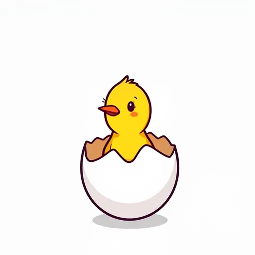
event
something that happens in a story
k2 · paint · Qwen 2 · CLIP pct 0.12 · own word 4/6 in module
shows: a yellow chick hatching from an egg
The picture shows a chick hatching, which is an event, but it does not clearly convey the concept of 'event' as something that happens in a story; it is more about a biological occurrence than a narrative event.
qwen-1-2 ela-k-story-time-characters-and-setting/event
prompt: an egg cracking open with a chick peeking out
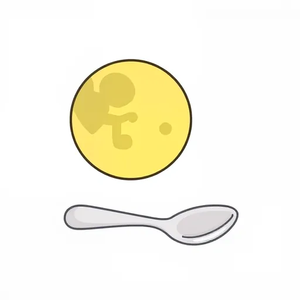
rhyme
words that end with the same sound
k2 · paint · Qwen 2 · CLIP pct 0.13 · own word 2/5 in module
shows: a yellow circle with a small figure and a spoon below it
The image does not clearly represent rhyming words; it is unrelated to the concept of words ending with the same sound.
qwen-1-2 ela-k-2-poems-and-songs-aloud/rhyme
prompt: a moon beside a spoon
account
a report of what happened
35 · paint · Qwen 2 · CLIP pct 0.14 · own word 6/6 in module
shows: a storm with lightning and clouds
The picture shows a storm, which may evoke the idea of a report or event, but does not clearly represent the concept of an 'account' as a report of what happened.
qwen-1-2 REDO in WORDWALL-PAINTINGS.md, picture not changed sinceela-4-firsthand-and-secondhand-accounts/account
prompt: a newspaper with a storm photo

coordinate adjectives
two describing words that each describe the noun equally
68 · paint · Qwen 2 · CLIP pct 0.15 · own word 2/5 in module
shows: a road with trees on both sides, leading into the distance
The image does not visually represent coordinate adjectives, which are two adjectives that describe a noun equally; it shows a landscape scene without any adjectives or noun pair.
qwen-1-2 ela-6-8-commas-dashes-and-ellipses/coordinate-adjectives
prompt: a long dusty road through desert
foreshadowing
hints about what will happen later
68 · paint · Qwen 2 · CLIP pct 0.16 · own word 2/6 in module
shows: a cracked ice surface
The image does not clearly relate to foreshadowing; it may suggest fragility or change but does not hint at future events.
qwen-1-2 ela-7-setting-plot-and-character-interplay/foreshadowing
prompt: cracked ice on a lake

detail
a fact or example that tells more
k2 · paint · Qwen 2 · CLIP pct 0.17 · own word 2/6 in module
shows: a cartoon dog playing with a basketball
The picture does not show a 'detail' as a fact or example that tells more; it shows a general activity without specific details.
qwen-1-2 ela-2-paragraph-writing/detail
prompt: a dog doing a trick with a ball
problem
the trouble a character must solve
35 · paint · Qwen 2 · CLIP pct 0.17 · own word 5/6 in module
shows: a red kite flying above trees
The picture does not clearly show a problem or trouble that a character must solve.
qwen-1-2 REDO in WORDWALL-PAINTINGS.md, picture not changed sinceela-3-narrative-writing/problem
prompt: a lost puppy alone on a sidewalk

metaphor
a direct comparison without like or as
68 · paint · Qwen 2 · CLIP pct 0.18 · own word 4/6 in module
shows: a messy room with a pig, clothes, toys, and boxes
The image does not depict a metaphor; it shows a chaotic scene that could be interpreted as a literal description, not a direct comparison without 'like' or 'as'.
qwen-1-2 REDO in WORDWALL-PAINTINGS.md, picture not changed sinceela-7-figurative-language-and-allusions/metaphor
prompt: music notes floating

persuasive
able to convince
68 · svg · Qwen 2 · CLIP pct 0.20 · own word 3/6 in module
shows: a scale with one side heavier than the other
The image depicts balance or weight, which is not directly related to the concept of persuasion or convincing others.
qwen-1-2 ela-8-argument-and-rebuttal/persuasive
prompt: svg: a balance tipped to one side

key detail
an important part of the story
k2 · paint · Qwen 2 · CLIP pct 0.20 · own word 3/6 in module
shows: a yellow chicken with red comb and tail feathers standing on seeds
The picture does not show or imply any key detail from a story; it is a generic illustration of a chicken, which does not connect to the concept of 'key detail' in storytelling.
qwen-1-2 ela-1-story-elements-and-lessons/key-detail
prompt: a hen pecking at seeds

irrelevant
not connected to the point
68 · svg · Qwen 2 · CLIP pct 0.21 · own word 2/6 in module
shows: two puzzle pieces, one blue and one orange, with the blue piece missing its tab and the orange piece having a tab that doesn't fit
qwen-1-2 ela-7-evaluating-arguments/irrelevant
prompt: svg: a puzzle piece that does not fit

long vowel
a vowel that says its name
k2 · paint · Qwen 2 · CLIP pct 0.21 · own word 3/6 in module
shows: a red boat with a flag and yellow blocks on deck, floating on wavy water
The picture does not visually represent a long vowel sound or its concept; it is unrelated to the definition of 'long vowel' as a vowel that says its name.
qwen-1-2 ela-2-long-vowels-and-two-syllable-words/long-vowel
prompt: a small boat

opinion
what you think or like
k2 · paint · Qwen 2 · CLIP pct 0.22 · own word 4/6 in module
shows: a happy puppy holding a green ball
The picture does not clearly show the concept of 'opinion' which relates to personal thoughts or feelings.
qwen-1-2 ela-k-draw-tell-and-write/opinion
prompt: a happy dog with a ball
strongest
the best and most convincing
68 · paint · Qwen 2 · CLIP pct 0.22 · own word 1/5 in module
shows: a gold medal with red ribbon
The medal represents achievement or excellence, not the best and most convincing argument or persuasion.
qwen-1-2 ela-6-8-theme-and-textual-evidence/strongest
prompt: a gold medal

simile
comparing two things using like or as
35 · paint · Qwen 2 · CLIP pct 0.24 · own word 1/7 in module
shows: a cartoon cheetah jumping happily
The picture does not show a simile or any comparison using 'like' or 'as'.
qwen-1-2 ela-3-literal-and-figurative-language/simile
prompt: a cheetah running

develop
to build an idea over a text
68 · svg · Qwen 2 · CLIP pct 0.25 · own word 1/6 in module
shows: a bar graph with increasing bars from left to right
The picture shows a bar graph, which may represent growth or development, but does not clearly depict the concept of 'building an idea over a text' as defined for the word 'develop'.
qwen-1-2 ela-6-central-idea-and-summary/develop
prompt: svg: a staircase of blocks

metaphor
a comparison that says one thing is another
35 · paint · Qwen 2 · CLIP pct 0.26 · own word 4/6 in module
shows: a messy room with toys, clothes, and a pig
The image does not clearly show a metaphor; it depicts a cluttered space without any explicit comparison between two unlike things.
qwen-1-2 REDO in WORDWALL-PAINTINGS.md, picture not changed sinceela-5-figurative-language/metaphor
prompt: a zebra in a school hallway
effect
what happens because of something else
35 · paint · Qwen 2 · CLIP pct 0.28 · own word 2/7 in module
shows: a muddy soccer field with puddles and a fence
The picture shows a muddy field, which might suggest 'effect' as a result of rain or weather, but it doesn't clearly convey the concept of 'what happens because of something else' in a way that directly connects to the definition of 'effect'.
qwen-1-2 ela-3-text-structure-and-search-tools/effect
prompt: a muddy soccer field with puddles

compound word
two words put together to make a new word
k2 · paint · Qwen 2 · CLIP pct 0.29 · own word 1/6 in module
shows: a sunflower with yellow petals and a brown center
The picture does not show two words combined to form a new word, which is the definition of a compound word.
qwen-1-2 ela-2-word-building/compound-word
prompt: a sunflower

relevant
closely connected to the point
68 · svg · Qwen 2 · CLIP pct 0.33 · own word 2/6 in module
shows: two puzzle pieces fitting together
The image shows interlocking puzzle pieces, which may imply connection or fit, but does not clearly convey the idea of being 'closely connected to the point' as in 'relevant'.
qwen-1-2 ela-6-tracing-an-argument/relevant
prompt: svg: a puzzle piece that fits

alter
to change
68 · svg · Qwen 2 · CLIP pct 0.33 · own word 1/6 in module
shows: a square turning into a rounded rectangle
The image shows a shape transformation, which is vague and not clearly tied to the meaning of 'alter' (to change), as it lacks context or explicit indication of change in form or function.
qwen-1-2 FIX in WORDWALL-DIAGRAMS.md, picture not changed sinceela-7-fiction-vs-history/alter
prompt: svg: a calendar page with a date crossed out
solution
how the problem gets solved
35 · paint · Qwen 2 · CLIP pct 0.34 · own word 1/6 in module
shows: a tree with a ladder and a kite flying in the branches
The image does not clearly depict a problem being solved, nor does it show a solution in the context of the word 'solution'.
qwen-1-2 REDO in WORDWALL-PAINTINGS.md, picture not changed sinceela-3-narrative-writing/solution
prompt: a puppy running toward a house with lit windows
problem
the trouble in a story
k2 · paint · Qwen 2 · CLIP pct 0.35 · own word 1/6 in module
shows: a red kite stuck in a tree with birds flying around
The picture shows a kite stuck in a tree, which could represent a problem, but it's not clearly or directly connected to the definition of 'problem' as 'the trouble in a story'.
qwen-1-2 PAINT in WORDWALL-DIAGRAMS.md, picture not changed sinceela-2-story-structure-and-point-of-view/problem
prompt: svg: a kite with a question mark
figurative language
words that mean more than their usual meaning
35 · paint · Qwen 2 · CLIP pct 0.35 · own word 1/6 in module
shows: rain falling from a cloud, three dogs walking, one dog standing alone
The image depicts a literal rain scene with animals, not illustrating figurative language, which involves words with meanings beyond their literal definitions.
qwen-1-2 REDO in WORDWALL-PAINTINGS.md, picture not changed sinceela-5-figurative-language/figurative-language
prompt: a colorful paint splash

accuracy
reading the words right
k2 · svg · Qwen 2 · CLIP pct 0.37 · own word 3/6 in module
shows: an open book with a green checkmark
The image shows a book and a checkmark, which may imply correctness or completion, but does not clearly convey the specific meaning of 'accuracy' as 'reading the words right'.
qwen-1-2 ela-1-reading-fluency/accuracy
prompt: svg: a book with a check mark

reason
why you think something
k2 · paint · Qwen 2 · CLIP pct 0.37 · own word 1/6 in module
shows: a dog sitting in front of a door, looking at it
The image does not clearly convey the concept of 'reason' or 'why you think something'; it may suggest curiosity or waiting, but not the idea of reasoning or justification.
qwen-1-2 ela-2-paragraph-writing/reason
prompt: a dog waiting at a door

concede
to admit a point
68 · svg · Qwen 2 · CLIP pct 0.43 · own word 1/6 in module
shows: a flag with a wavy design
The flag image does not visually represent the concept of 'concede' (to admit a point) and is unrelated to the word's meaning.
qwen-1-2 ela-8-argument-and-rebuttal/concede
prompt: svg: a white flag
interpret
to explain what information means
68 · paint · Qwen 2 · CLIP pct 0.43 · own word 1/5 in module
shows: three colored bars with a question mark above the middle one
The image does not clearly show the concept of interpreting information; it may suggest inquiry or comparison but lacks direct connection to explaining meaning.
qwen-1-2 ela-6-8-listening-to-speakers-and-discussing/interpret
prompt: a bar chart with a question mark

synonym
a word that means the same or almost the same as another
35 · paint · Qwen 2 · CLIP pct 0.45 · own word 2/7 in module
shows: two elephants standing together
The picture does not show synonyms; it shows two elephants, which may suggest companionship or similarity but not the definition of synonyms.
qwen-1-2 ela-3-literal-and-figurative-language/synonym
prompt: two elephants of the same size side by side

formal style
serious, academic language
68 · paint · Qwen 2 · CLIP pct 0.48 · own word 1/6 in module
shows: a simple flat illustration of a document with lines of text
The image is too generic and does not convey the seriousness or academic nature of formal style.
qwen-1-2 ela-8-argument-and-rebuttal/formal-style
prompt: a formal letterhead

logical
following clear reasoning
68 · svg · Qwen 2 · CLIP pct 0.49 · own word 1/6 in module
shows: a podium with three steps labeled 1, 2, and 3
The image shows a ranking or competition podium, which may imply order or hierarchy, but does not clearly represent 'logical' as 'following clear reasoning'.
qwen-1-2 ela-7-argument-with-counterclaims/logical
prompt: svg: three steps in a row

fluency
reading smoothly, at a good speed, with feeling
k2 · paint · Qwen 2 · CLIP pct 0.49 · own word 3/6 in module
shows: an open book with pages
The picture shows a book, which is related to reading but does not clearly convey the concept of fluency (smooth, fast, expressive reading).
qwen-1-2 ela-1-reading-fluency/fluency
prompt: an open book with smooth flowing lines

structure
how a text is organized
35 · svg · Qwen 2 · CLIP pct 0.49 · own word 1/5 in module
shows: a warning sign turning into a light bulb
The image does not clearly represent the concept of 'structure' as text organization; it may imply problem-solving or insight, which is not directly related to textual structure.
qwen-1-2 ela-3-5-comparing-texts-side-by-side/structure
prompt: svg: two boxes with an arrow from problem to solution icons

adverb
a word that tells how, when or where something happens
35 · paint · Qwen 2 · CLIP pct 0.51 · own word 2/6 in module
shows: a cartoon cat running
The picture shows motion, which could be interpreted as an adverbial concept, but does not clearly illustrate how, when, or where something happens as defined by the word 'adverb'.
qwen-1-2 ela-3-parts-of-speech/adverb
prompt: a cat running fast with motion lines

pacing
how fast or slow a story moves
35 · paint · Qwen 2 · CLIP pct 0.54 · own word 1/6 in module
shows: a cartoon snail with a spiral shell and antennae
The snail is a common symbol for slow movement, which is related to 'pacing' but does not directly show how fast or slow a story moves.
qwen-1-2 ela-5-narrative-craft/pacing
prompt: a slow-moving snail
informational text
writing that teaches facts about a topic
68 · paint · Qwen 2 · CLIP pct 0.56 · own word 1/5 in module
shows: an open book with a germ illustration and a medicine bottle
The picture shows a book with illustrations, which may suggest a textbook or educational material, but does not clearly convey the definition of 'informational text' as writing that teaches facts. The content is too specific to a single topic (germs) and lacks the broader context of informational text.
qwen-1-2 REDO in WORDWALL-PAINTINGS.md, picture changed sinceela-6-8-analysis-with-evidence-from-nonfiction/informational-text
prompt: a science magazine open on a desk
topic
what a text is about
35 · paint · Qwen 2 · CLIP pct 0.59 · own word 1/5 in module
shows: an open book with two volcano illustrations
The picture shows volcanoes, which are not directly related to the word 'topic' meaning the subject of a text.
qwen-1-2 ela-3-5-comparing-texts-side-by-side/topic
prompt: two books side by side with a volcano on each

sentence
a group of words that tells a whole idea
k2 · svg · Qwen 2 · CLIP pct 0.60 · own word 1/5 in module
shows: three rectangles and a dot
The image does not clearly represent a sentence or group of words telling a whole idea; it is abstract and lacks context.
qwen-1-2 ela-k-2-adding-details-and-fixing-sentences/sentence
prompt: svg: a word strip starting with a big block and ending with a dot
research question
the question your project tries to answer
35 · paint · Qwen 2 · CLIP pct 0.61 · own word 1/6 in module
shows: a turtle on a beach under a moon with question marks
The image does not clearly connect to the concept of a 'research question' as it lacks any indication of inquiry, investigation, or project-based learning.
qwen-1-2 REDO in WORDWALL-PAINTINGS.md, picture not changed sinceela-4-short-research-projects/research-question
prompt: a sea turtle on a beach at night
speaker
the person who is talking
k2 · people · Qwen 2 · CLIP pct 0.62 · own word 1/5 in module
shows: an older woman holding a honeycomb frame, standing in front of four children sitting on the floor
The picture shows a beekeeper or educator, not a speaker in the sense of someone talking; the context is misleading for the word 'speaker'.
qwen-1-2 ela-k-2-listening-and-asking-questions/speaker
prompt: people: an adult beekeeper, a woman with light skin and gray hair in a white beekeeper jacket with the veil pushed back,
Achilles' heel
a phrase for a weak spot
35 · paint · Qwen 2 · CLIP pct 0.64 · own word 1/6 in module
shows: a golden sandal with a red circular detail on the strap
The image does not clearly represent a weak spot or vulnerability, which is the core meaning of 'Achilles' heel'.
qwen-1-2 REDO in WORDWALL-PAINTINGS.md, picture not changed sinceela-4-myths-and-allusions/achilles-heel
prompt: a Greek sandal

answer
what you say back to a question
k2 · svg · Qwen 2 · CLIP pct 0.66 · own word 1/6 in module
shows: a green checkmark inside a speech bubble
The checkmark may imply correctness or approval, not necessarily a response to a question, which is the core meaning of 'answer'.
qwen-1-2 ela-k-talk-it-over/answer
prompt: svg: a speech bubble with a check mark

complex sentence
an independent clause with at least one dependent clause
68 · svg · Qwen 2 · CLIP pct 0.68 · own word 1/6 in module
shows: a large rectangle with a smaller rectangle attached to its side
The image does not visually represent the structure of a complex sentence with an independent clause and a dependent clause.
qwen-1-2 ela-7-phrases-clauses-and-sentence-types/complex-sentence
prompt: svg: a big block with a smaller block attached

statistic
a fact shown as a number
35 · svg · Qwen 2 · CLIP pct 0.70 · own word 1/6 in module
shows: a pie chart showing 1 in 3
The picture shows a visual representation of a fraction or probability, not a statistic as defined (a fact shown as a number).
qwen-1-2 FIX in WORDWALL-DIAGRAMS.md, picture not changed sinceela-5-reasons-and-evidence/statistic
prompt: svg: a pie chart with a third shaded

compare
to tell how things are alike
35 · svg · Qwen 2 · CLIP pct 0.74 · own word 2/6 in module
shows: two overlapping circles labeled A and B
The picture shows overlap, which suggests similarity, but does not clearly convey the action of comparing or the concept of telling how things are alike.
qwen-1-2 ela-5-comparing-characters-and-themes/compare
prompt: svg: a Venn diagram
tell
to say in words
k2 · paint · Qwen 2 · CLIP pct 0.76 · own word 1/5 in module
shows: a speech bubble with a star inside
The star does not clearly represent the action of 'telling' or saying words; it may imply something special or important, but not the act of speaking.
qwen-1-2 ela-k-2-show-and-tell/tell
prompt: a speech bubble with a star
analogy
a comparison that explains one thing using another
68 · paint · Qwen 3 · CLIP pct 0.00 · own word 4/5 in module
shows: a water pump with a heart and flowers, suggesting a metaphorical comparison
The image shows a metaphorical comparison but does not clearly depict the structure or function of an analogy as a comparison explaining one thing using another; it may be interpreted as a metaphor or symbol rather than a direct representation of the word 'analogy'.
qwen-3+clip ela-8-puns-irony-and-allusion/analogy
prompt: a heart beside a water pump
opinion
a belief that cannot be proven
68 · paint · Qwen 3 · CLIP pct 0.01 · own word 5/6 in module
shows: a pizza with one slice missing, one slice with a heart thought bubble, and one slice with a sad face thought bubble
The image shows contrasting emotions (love vs. sadness) which may relate to personal preference or feeling, but does not clearly represent the abstract concept of 'opinion' as a belief that cannot be proven.
qwen-3+clip REDO in WORDWALL-PAINTINGS.md, picture not changed sinceela-8-conflicting-information/opinion
prompt: a bridge at sunset
tone
the author's attitude shown through word choice
68 · paint · Qwen 3 · CLIP pct 0.01 · own word 6/6 in module
shows: two envelopes, one with hearts and flowers (positive), one with a cloud and steam (negative)
The picture shows contrasting emotions or moods, which could relate to tone, but doesn't clearly depict 'author's attitude through word choice', it's more about emotional content than textual style.
qwen-3+clip REDO in WORDWALL-PAINTINGS.md, picture not changed sinceela-6-connotation-and-context/tone
prompt: a crumpled letter
motivation
the reason a character acts
35 · paint · Qwen 3 · CLIP pct 0.02 · own word 5/6 in module
shows: a squirrel climbing a tree toward a bird feeder
The picture shows a squirrel seeking food, which could relate to 'motivation' but doesn't clearly show 'reason for action' as defined; it might better fit 'curiosity' or 'hunger'.
qwen-3+clip REDO in WORDWALL-PAINTINGS.md, picture not changed sinceela-5-comparing-characters-and-themes/motivation
prompt: a barn at sunset

however
a word that introduces a contrast
68 · svg · Qwen 3 · CLIP pct 0.03 · own word 5/6 in module
shows: a Y-shaped road with dashed lines
The image depicts a road or path, which may symbolize a contrast or direction change, but it does not clearly or directly represent the concept of 'however' as a contrastive conjunction.
qwen-3+clip ela-7-argument-with-counterclaims/however
prompt: svg: a fork in a path

convincing
good at making you believe something
35 · svg · Qwen 3 · CLIP pct 0.03 · own word 6/6 in module
shows: a scale with one side heavier than the other
The image shows imbalance, which may relate to persuasion or influence, but doesn't clearly depict 'convincing' as making someone believe something.
qwen-3+clip ela-5-reasons-and-evidence/convincing
prompt: svg: a balance tipped far to one side

key details
the most important facts or events
35 · svg · Qwen 3 · CLIP pct 0.04 · own word 3/6 in module
shows: three stars next to three lines
The image does not clearly convey 'key details' as the most important facts or events; it may be interpreted as a list or checklist rather than highlighting importance.
qwen-3+clip ela-4-theme-and-summary/key-details
prompt: svg: a list with three items starred

time period
a span of history with shared traits
68 · paint · Qwen 3 · CLIP pct 0.04 · own word 3/6 in module
shows: a vintage orange radio with a speaker grille and knobs
The radio is a device for receiving broadcasts, not a visual representation of a time period in history.
qwen-3+clip ela-7-fiction-vs-history/time-period
prompt: an old radio
motivation
the reason behind a character's actions
68 · paint · Qwen 3 · CLIP pct 0.05 · own word 2/6 in module
shows: a squirrel climbing a tree near a bird feeder
The picture shows a squirrel actively seeking food, which may imply motivation, but does not clearly convey the concept of 'reason behind a character's actions' as defined for the word 'motivation'.
qwen-3+clip REDO in WORDWALL-PAINTINGS.md, picture not changed sinceela-7-setting-plot-and-character-interplay/motivation
prompt: footprints in snow

fact
something that is true and can be checked
35 · paint · Qwen 3 · CLIP pct 0.07 · own word 3/5 in module
shows: an owl perched on a branch with leaves and a moon in the background
The picture does not directly relate to the definition of 'fact' (something true and checkable); it may evoke curiosity or mystery but doesn't clearly represent verifiable information.
qwen-3+clip ela-3-notes-and-categories/fact
prompt: an owl on a branch under the moon

unreliable narrator
a narrator whose account cannot be fully trusted
68 · svg · Qwen 3 · CLIP pct 0.09 · own word 6/6 in module
shows: a speech bubble with a crack and three dots
The image suggests a broken or unreliable message, which is somewhat related to an unreliable narrator, but the visual is too vague and could represent other concepts like broken communication or a glitch, not specifically a narrator's unreliability.
qwen-3+clip ela-6-point-of-view/unreliable-narrator
prompt: svg: a speech bubble with a crack
opinion
what you think about something
k2 · paint · Qwen 3 · CLIP pct 0.10 · own word 1/6 in module
shows: a beach ball with a red heart on top
The image shows affection or love, not a personal opinion; it could fit 'like' or 'favorite' better than 'opinion'.
qwen-3+clip REDO in WORDWALL-PAINTINGS.md, picture not changed sinceela-1-writing-sentences-and-stories/opinion
prompt: a beach ball on the sand

root
the main part of a word that carries meaning
35 · svg · Qwen 1 · CLIP pct 0.00 · own word 2/6 in module
shows: The word 'unkindly' in orange and black text
The picture shows the word 'unkindly', which is unrelated to the word 'root' and its definition as the main part of a word that carries meaning.
diagram-text ela-4-greek-and-latin-roots/root
prompt: svg: a word with its middle part highlighted

root word
a word you can add parts to
k2 · svg · Qwen 1 · CLIP pct 0.01 · own word 6/6 in module
shows: the word jumping
The picture shows the word 'jumping', which is unrelated to the concept of 'root word' or adding parts to a word.
diagram-text ela-1-word-meanings/root-word
prompt: svg: the word jumping with jump highlighted

expression
reading with feeling, like a storyteller
k2 · svg · Qwen 1 · CLIP pct 0.02 · own word 5/6 in module
shows: orange speech bubble with exclamation mark
The picture shows an exclamation mark, which may imply surprise or urgency, not reading with feeling or storytelling.
diagram-text ela-1-reading-fluency/expression
prompt: svg: a speech bubble with an exclamation mark

syllable
a word part with one vowel sound
35 · svg · Qwen 1 · CLIP pct 0.06 · own word 3/6 in module
shows: bas ket
The picture shows the word 'bas ket' which is a visual representation of the word 'basket', not a syllable. It does not illustrate the concept of a syllable as a word part with one vowel sound.
diagram-text ela-3-multisyllable-decoding/syllable
prompt: svg: the word basket split into two colored blocks, bas and ket

base word
a word that can stand alone before parts are added
35 · svg · Qwen 1 · CLIP pct 0.07 · own word 3/6 in module
shows: the word 'replaying' with orange and black letters
The picture shows the word 'replaying' which is not related to the concept of 'base word'.
diagram-text ela-3-multisyllable-decoding/base-word
prompt: svg: the word replaying with play highlighted in the middle

space
the empty gap between words
k2 · svg · Qwen 1 · CLIP pct 0.07 · own word 6/7 in module
shows: a letter 'o' with a dashed outline, resembling a placeholder or gap
The image does not represent a 'space' as the empty gap between words; it shows a single letter with a dashed outline, which is misleading for the word 'space'.
diagram-text ela-k-print-concepts-and-the-alphabet/space
prompt: svg: two words with a finger-wide gap between them

irregular spelling
a spelling that does not follow the usual rules
35 · svg · Qwen 1 · CLIP pct 0.08 · own word 6/6 in module
shows: a question mark above the word 'said'
The image does not depict irregular spelling; it shows a question mark above the word 'said', which is unrelated to the concept of irregular spelling.
diagram-text ela-3-multisyllable-decoding/irregular-spelling
prompt: svg: the word said with a question mark over the letters ai

root word
the main part of a word that carries its meaning
35 · svg · Qwen 1 · CLIP pct 0.10 · own word 4/7 in module
shows: the word 'comfortable' with 'comfort' in orange and 'able' in black
The picture shows the word 'comfortable' but does not depict or illustrate a 'root word' or its meaning.
diagram-text ela-3-literal-and-figurative-language/root-word
prompt: svg: the word comfortable with comfort highlighted

meaning
what a word tells you
k2 · svg · Qwen 1 · CLIP pct 0.11 · own word 6/6 in module
shows: a word 'tiny' with an illustration of a very small bug
The picture is unrelated to the word 'meaning' which refers to what a word tells you.
diagram-text CODE in WORDWALL-PAINTINGS.md, picture not changed sinceela-1-word-meanings/meaning
prompt: svg: the word card "tiny" points to what it tells you, very small

root word
the main word you build on
k2 · svg · Qwen 1 · CLIP pct 0.13 · own word 5/6 in module
shows: the word 'kindness' in orange and black text
The picture does not show a root word or any diagram related to building words; it shows the word 'kindness' which is unrelated to the concept of 'root word'.
diagram-text ela-2-word-building/root-word
prompt: svg: the word kindness with kind highlighted

precise
exact and clear
68 · svg · Qwen 1 · CLIP pct 0.15 · own word 6/6 in module
shows: a diagram showing 'nice' to 'brave'
The picture does not show or relate to the word 'precise'.
diagram-text ela-7-informative-writing/precise
prompt: svg: a target with an arrow dead center

phrase
a small group of words read together
k2 · svg · Qwen 1 · CLIP pct 0.16 · own word 1/6 in module
shows: orange arc above text 'in the park'
The picture does not show a phrase or a group of words read together; it shows a simple graphic with text that is unrelated to the definition of 'phrase'.
diagram-text ela-1-reading-fluency/phrase
prompt: svg: three words under one swoop line

spell
to write the letters of a word in order
k2 · svg · Qwen 1 · CLIP pct 0.18 · own word 6/6 in module
shows: letters r, a, i, n in colored boxes
The picture shows the word 'rain' not 'spell'.
diagram-text ela-2-long-vowels-and-two-syllable-words/spell
prompt: svg: the letters r, a, i, n on tiles

decode
to use letter sounds to read a word
k2 · svg · Qwen 1 · CLIP pct 0.19 · own word 6/6 in module
shows: The word 'ship' broken into letters in colored boxes
The picture shows the word 'ship', not 'decode', and does not illustrate the concept of decoding or letter sounds.
diagram-text ela-1-phonics-blends-and-digraphs/decode
prompt: svg: a word broken into sound boxes

emphasis
the importance a writer gives to something
68 · svg · Qwen 1 · CLIP pct 0.20 · own word 3/6 in module
shows: the word 'really' underlined
The picture shows the word 'really' underlined, which is unrelated to the concept of 'emphasis' as defined for the classroom word wall.
diagram-text ela-7-comparing-authors/emphasis
prompt: svg: a bold, underlined word

nuance
a small difference in meaning
68 · svg · Qwen 1 · CLIP pct 0.24 · own word 6/6 in module
shows: three blue boxes with words slim, thin, skinny
The picture shows synonyms for 'thin' rather than illustrating 'nuance' as a small difference in meaning.
diagram-text FIX in WORDWALL-DIAGRAMS.md, picture not changed sinceela-6-connotation-and-context/nuance
prompt: svg: two nearly matching color swatches

perfect tense
a verb form with has, have or had
35 · svg · Qwen 1 · CLIP pct 0.39 · own word 1/6 in module
shows: timeline with three blue circles and one red circle labeled 'now', with a green checkmark above the third blue circle
The picture does not show or imply the concept of 'perfect tense' (verb form with has/have/had) and is misleading for this word.
diagram-text ela-5-conjunctions-tense-and-commas/perfect-tense
prompt: svg: a timeline with a completed check mark

sight word
a word you know right away without sounding it out
k2 · svg · Qwen 1 · CLIP pct 0.44 · own word 3/6 in module
shows: the word 'the' in a blue box with a star
The picture shows the word 'the', which is a common sight word, but the card is labeled as teaching 'sight word', which is a concept, not a specific word. The image does not visually represent the concept of a sight word.
diagram-text ela-k-letter-sounds-and-sight-words/sight-word
prompt: svg: the word the on a flash card with a star

first person
told by a narrator using I and me
68 · svg · Qwen 1 · CLIP pct 0.46 · own word 2/6 in module
shows: a blue speech bubble with a vertical blue bar inside
The image does not depict or suggest 'first person' narration; it is a generic speech bubble with no indication of 'I' or 'me'.
diagram-text ela-6-point-of-view/first-person
prompt: svg: a speech bubble with the word I

word
letters put together that mean something
k2 · svg · Qwen 1 · CLIP pct 0.48 · own word 3/7 in module
shows: three separate letters c, a, t arranged above the word cat
The picture shows the word 'cat', not 'word', which is the target word for the card.
diagram-text ela-k-print-concepts-and-the-alphabet/word
prompt: svg: the letters c, a, t joined into one word

delineate
to outline each part clearly
68 · svg · Qwen 1 · CLIP pct 0.52 · own word 1/5 in module
shows: three numbered horizontal bars
The picture does not show the word 'delineate' or its meaning of outlining parts clearly; it is too generic and lacks any visual representation of outlining or detailing.
diagram-text ela-6-8-listening-to-speakers-and-discussing/delineate
prompt: svg: an outline with three numbered lines

dynamic character
a character who changes during the story
68 · svg · Qwen 1 · CLIP pct 0.52 · own word 1/6 in module
shows: a seed growing into a flower
The picture shows growth and development, which is not the definition of 'dynamic character' (a character who changes during the story).
diagram-text ela-6-plot-and-character-development/dynamic-character
prompt: svg: a seed growing into a flower

capital
a big letter at the start of a sentence or name
k2 · svg · Qwen 1 · CLIP pct 0.54 · own word 2/6 in module
shows: The cat ran.
The picture shows a sentence, not a capital letter or its definition.
diagram-text FIX in WORDWALL-DIAGRAMS.md, picture not changed sinceela-k-words-and-sentences/capital
prompt: svg: a sentence with its first letter big and circled

vague pronoun
a pronoun with an unclear antecedent
68 · svg · Qwen 1 · CLIP pct 0.61 · own word 4/6 in module
shows: a red question mark above a blue square with the word 'it'
The image does not depict a vague pronoun or an unclear antecedent; it simply shows the word 'it' with a question mark, which is misleading for the concept of a vague pronoun.
diagram-text ela-6-pronouns-and-sentence-variety/vague-pronoun
prompt: svg: a pronoun tile with a question mark

word
a group of letters that means something
k2 · svg · Qwen 1 · CLIP pct 0.63 · own word 1/5 in module
shows: an elephant with the word 'enormous' above it
The picture shows the word 'enormous', not 'word', and does not depict a group of letters.
diagram-text CODE in WORDWALL-PAINTINGS.md, picture not changed sinceela-k-2-new-words-from-read-alouds/word
prompt: svg: the word enormous with its letters spaced out and a big elephant beside it

intensive pronoun
a pronoun ending in -self that adds emphasis
68 · svg · Qwen 1 · CLIP pct 0.65 · own word 1/6 in module
shows: the word myself in purple
The picture shows only the word 'myself' without any visual representation of an intensive pronoun or its function, making it misleading for teaching the concept.
diagram-text ela-6-pronouns-and-sentence-variety/intensive-pronoun
prompt: svg: the word myself in bold

syllable
a beat in a word
k2 · svg · Qwen 1 · CLIP pct 0.76 · own word 1/6 in module
shows: an apple with two orange triangles above it and the text 'ap • ple'
The picture shows a word divided into syllables, but the word 'syllable' is not visually represented; it's misleading as the image is not about beats or rhythm in words.
diagram-text ela-k-rhymes-and-sounds/syllable
prompt: svg: an apple with two clap marks above it

Greek
from the language of ancient Greece
68 · svg · Qwen 1 · CLIP pct 0.82 · own word 2/5 in module
shows: Greek root: graph = write, with icons of a building and a word
The picture shows 'graph' meaning 'write', which is incorrect for the word 'Greek' (meaning from ancient Greece).
diagram-text CODE in WORDWALL-PAINTINGS.md, picture not changed sinceela-6-8-academic-vocabulary-strategies/greek
prompt: svg: graph picked out in photograph and autograph, labeled Greek root: write

bold
thick, dark letters that show an important word
k2 · svg · Qwen 1 · CLIP pct 0.82 · own word 1/6 in module
shows: a big dog
The picture shows the phrase 'a big dog', which is unrelated to the word 'bold' as defined in the context.
diagram-text ela-1-text-features/bold
prompt: svg: a line of text with one word in thick letters

character trait
a word that describes how a character acts
35 · svg · Qwen 2 · CLIP pct 0.07 · own word 4/6 in module
shows: a red name tag with the word 'HELLO' and a yellow star
The picture does not relate to the concept of a character trait; it shows a greeting tag and a star, which are unrelated to describing how a character acts.
diagram-text ela-4-theme-and-summary/character-trait
prompt: svg: a name tag with a star

moral
the lesson of a fable
k2 · svg · Qwen 2 · CLIP pct 0.08 · own word 3/6 in module
shows: a turtle with a light bulb above it
The image does not clearly represent a fable or its lesson, and the light bulb may imply 'idea' or 'insight' rather than a moral lesson.
diagram-text ela-2-fables-and-folktales/moral
prompt: svg: a lightbulb over a tortoise

key
tells what each picture on a graph stands for
35 · svg · Qwen 1 · CLIP pct 0.02 · own word 5/6 in module
shows: a yellow star equals 10
The picture shows a star and a number, which is unrelated to the definition of 'key' as it pertains to graphs.
qwen-1-2 math-3-scaled-graphs/key
prompt: svg: a box showing one star = 10

estimate
a smart guess that is close
k2 · svg · Qwen 1 · CLIP pct 0.03 · own word 1/6 in module
shows: two wavy lines and the number 500
The image does not visually represent the concept of 'estimate' as a smart guess that is close; it shows a number and abstract symbols without context or relation to guessing or approximation.
qwen-1-2 math-2-adding-and-subtracting-to-1000/estimate
prompt: svg: a wavy equal sign next to 500

one hundred twenty
ten more than one hundred ten
k2 · svg · Qwen 1 · CLIP pct 0.05 · own word 6/6 in module
shows: grid of green squares
The picture does not visually represent 'one hundred twenty' or the concept of 'ten more than one hundred ten'.
qwen-1-2 math-1-counting-to-120/one-hundred-twenty
prompt: svg: twelve rods of ten cubes

statistic
a number that describes a sample
912 · svg · Qwen 1 · CLIP pct 0.15 · own word 1/6 in module
shows: a blue letter X with a horizontal bar above it
The image does not represent a statistic; it resembles a symbol for 'X' or a mathematical variable, not a number describing a sample.
qwen-1-2 math-12-sampling-distributions/statistic
prompt: svg: x̄

step
one part of solving a problem
k2 · svg · Qwen 1 · CLIP pct 0.21 · own word 2/6 in module
shows: a number one in a light blue box
The picture shows the number '1', which does not visually represent the concept of 'step' as one part of solving a problem. It is misleading for the intended word.
qwen-1-2 math-2-two-step-word-problems/step
prompt: svg: a single stair step marked 1

minus
the − sign; it means take away
k2 · svg · Qwen 1 · CLIP pct 0.23 · own word 2/6 in module
shows: a red horizontal line
The picture shows only a horizontal line, which does not clearly represent the concept of 'minus' as 'take away' or the minus sign.
qwen-1-2 math-k-putting-together-and-taking-apart/minus
prompt: svg: a big minus sign

null hypothesis
the claim of no effect or no difference
912 · svg · Qwen 1 · CLIP pct 0.30 · own word 2/6 in module
shows: letter H and a subscript 0
The image shows 'H₀', which is a common notation for the null hypothesis in statistics, but it does not visually depict the concept of 'no effect or no difference' and is too abstract for a classroom word wall without context.
qwen-1-2 math-12-confidence-intervals-and-significance-tests/null-hypothesis
prompt: svg: H₀

parameter
a number that describes a population
912 · svg · Qwen 1 · CLIP pct 0.35 · own word 2/6 in module
shows: a Greek letter mu
The Greek letter mu (μ) is commonly used in statistics to represent a population mean, but it is not the definition of 'parameter' and does not clearly convey the concept of a number describing a population.
qwen-1-2 math-12-sampling-distributions/parameter
prompt: svg: μ

false
not right
k2 · svg · Qwen 1 · CLIP pct 0.41 · own word 1/6 in module
shows: a red X symbol
The red X symbol typically represents 'wrong' or 'incorrect', which is the opposite of 'false' in context, and may confuse young learners who might associate it with 'not allowed' or 'error' rather than understanding 'false' as 'not right'.
qwen-1-2 math-1-the-equal-sign/false
prompt: svg: a red X

significance level
the cutoff for rejecting the null hypothesis
912 · svg · Qwen 1 · CLIP pct 0.45 · own word 3/6 in module
shows: alpha equals 0.05
The picture shows a numerical value (0.05) for alpha, which is a significance level, but it does not visually represent the concept of a cutoff for rejecting the null hypothesis. It lacks context or diagrammatic representation that would help students understand the meaning of 'significance level' as described in the card.
qwen-1-2 math-12-confidence-intervals-and-significance-tests/significance-level
prompt: svg: α = 0.05

prime number
a number with exactly two factors, 1 and itself
35 · svg · Qwen 1 · CLIP pct 0.47 · own word 3/6 in module
shows: seven orange circles in a row
The picture shows circles, not a number or its factors, so it does not represent a prime number.
qwen-1-2 math-4-factors-and-multiples/prime-number
prompt: svg: 7 dots that only make one row

correlation coefficient
a number from −1 to 1 measuring linear correlation
912 · svg · Qwen 1 · CLIP pct 0.63 · own word 2/6 in module
shows: a single number 0.92
The picture only shows a number without any context or visual representation of correlation or linear relationship.
qwen-1-2 math-9-data-in-one-and-two-variables/correlation-coefficient
prompt: svg: r = 0.92
estimate
a close guess using numbers that are easy to work with
35 · paint · Qwen 2 · CLIP pct 0.04 · own word 5/6 in module
shows: a jar full of colorful jelly beans with some spilled out
The picture does not show the concept of estimating or using easy numbers to guess; it depicts a collection of candies, which is unrelated to the definition of 'estimate'.
qwen-1-2 math-3-patterns-and-two-step-problems/estimate
prompt: a big jar filled with jelly beans

column
a line going up and down
k2 · svg · Qwen 2 · CLIP pct 0.04 · own word 2/6 in module
shows: three yellow stars stacked vertically
The picture shows vertical alignment but does not clearly depict a 'column' as a line going up and down; it shows discrete objects rather than a continuous line.
qwen-1-2 math-2-odd-even-and-arrays/column
prompt: svg: a column of 3 stars

random variable
a numerical outcome of a chance process
912 · svg · Qwen 2 · CLIP pct 0.09 · own word 6/6 in module
shows: three coins labeled H, T, H with X=2
The image shows a specific outcome (H, T, H) and X=2, which may imply a count or value, but does not clearly convey the concept of a random variable as a numerical outcome of a chance process.
qwen-1-2 math-12-probability-and-random-variables/random-variable
prompt: svg: X = number of heads

fluency
knowing facts fast and right
k2 · paint · Qwen 2 · CLIP pct 0.10 · own word 1/6 in module
shows: a stopwatch showing time
The stopwatch represents speed or timing, not the concept of knowing facts fast and right.
qwen-1-2 math-2-fluency-within-20/fluency
prompt: a stopwatch

mean
the average found by adding values and dividing by the count
68 · svg · Qwen 2 · CLIP pct 0.11 · own word 5/6 in module
shows: three groups of colored squares, with one group taller than the others
The picture does not show addition or division, which are essential for calculating mean; it only visually represents grouping, which is unrelated to the definition of mean.
qwen-1-2 math-6-summarizing-data/mean
prompt: svg: three bars leveled to equal height

strategy
a plan to solve a problem
k2 · svg · Qwen 2 · CLIP pct 0.12 · own word 5/6 in module
shows: a light bulb and the math problem 7 + 7
The image depicts a light bulb and a math equation, which may suggest 'thinking' or 'problem solving' but does not clearly represent a 'strategy' as a plan to solve a problem.
qwen-1-2 math-1-fact-strategies/strategy
prompt: svg: a lightbulb next to 7 + 7

data
information we collect
k2 · svg · Qwen 2 · CLIP pct 0.13 · own word 2/6 in module
shows: clipboard with tally marks
tally marks suggest counting or recording, not specifically 'information we collect'
qwen-1-2 math-1-picture-graphs-and-tallies/data
prompt: svg: a clipboard with tally marks

binomial
a polynomial with two terms
912 · svg · Qwen 2 · CLIP pct 0.15 · own word 4/6 in module
shows: a variable x plus a constant 5
The image shows a simple algebraic expression with two terms, which is a binomial, but it does not explicitly convey the definition or context of the word 'binomial' as a polynomial with two terms. It is too basic and lacks educational context for a word wall.
qwen-1-2 FIX in WORDWALL-DIAGRAMS.md, picture not changed sincemath-9-polynomial-arithmetic/binomial
prompt: svg: x + 5

mental math
solving in your head
k2 · svg · Qwen 2 · CLIP pct 0.18 · own word 3/6 in module
shows: a cloud with the math problem 40 + 30
The image shows a math problem, which is not directly related to the concept of mental math as described in the word wall card. Mental math refers to solving math problems in one's head, not necessarily using a visual or written diagram.
qwen-1-2 math-1-adding-tens-and-ones/mental-math
prompt: svg: a thought cloud with 40 + 30

range
all possible output values
912 · svg · Qwen 2 · CLIP pct 0.19 · own word 4/6 in module
shows: a vertical line with a horizontal line intersecting at the bottom
The image depicts a vertical line intersecting a horizontal line, which may represent a coordinate system or a graph, but does not clearly convey the concept of 'range' as all possible output values.
qwen-1-2 math-9-function-notation-and-graphs/range
prompt: svg: a vertical axis shaded above 0

conditional probability
the chance of an event given another has happened
912 · svg · Qwen 2 · CLIP pct 0.20 · own word 4/6 in module
shows: two overlapping circles labeled A and B
The diagram shows set intersection but does not visually represent conditional probability, which involves probability given a condition.
qwen-1-2 math-10-probability-rules/conditional-probability
prompt: svg: a Venn diagram with B highlighted

mental math
solving in your head
k2 · svg · Qwen 2 · CLIP pct 0.23 · own word 2/6 in module
shows: a cloud with the math problem 10 + 9
The image shows a math problem, which is not directly related to the concept of mental math as described in the word wall card. Mental math refers to solving math problems in one's head, not necessarily a visual representation of a problem.
qwen-1-2 math-2-fluency-within-20/mental-math
prompt: svg: a thought cloud with 10 + 9

composite number
a number with more than two factors
35 · svg · Qwen 2 · CLIP pct 0.27 · own word 2/6 in module
shows: dots arranged in rows with increasing number of dots per row
The picture shows a visual pattern of dots, but does not clearly represent the concept of factors or composite numbers. It lacks explicit connection to the definition of a composite number (having more than two factors).
qwen-1-2 math-4-factors-and-multiples/composite-number
prompt: svg: three different rectangles of 12 dots

divisible
can be divided evenly with no remainder
35 · svg · Qwen 2 · CLIP pct 0.52 · own word 3/6 in module
shows: three dice showing numbers 4, 5, and 6
The picture shows dice, which are unrelated to the concept of divisibility; it does not visually represent division or remainders.
qwen-1-2 math-4-factors-and-multiples/divisible
prompt: svg: 18 dots in 3 even groups

population
the whole group you want to learn about
68 · svg · Qwen 2 · CLIP pct 0.76 · own word 1/6 in module
shows: grid of blue dots
The picture shows a grid of dots, which could represent a sample or data set, but does not clearly convey the concept of 'population' as a whole group being studied.
qwen-1-2 math-7-sampling-and-inference/population
prompt: svg: a large grid of dots

independent events
events where one does not affect the other
912 · svg · Qwen 3 · CLIP pct 0.00 · own word 5/6 in module
shows: two coins labeled H and T
The image shows coins, which are related to probability, but does not explicitly convey the concept of 'independent events', events where one does not affect the other. It could represent independent events, but lacks context or visual cues to clearly demonstrate independence.
qwen-3+clip math-10-probability-rules/independent-events
prompt: svg: two coins

flip the sign
reverse an inequality when multiplying or dividing by a negative
68 · svg · Qwen 3 · CLIP pct 0.04 · own word 1/6 in module
shows: a left arrow, a circular arrow, and a right arrow
The image shows reversal or flipping, but does not clearly indicate the context of inequality signs or multiplication/division by a negative number.
qwen-3+clip math-7-multi-step-equations-and-inequalities/flip-the-sign
prompt: svg: < turning into >

fluency
knowing facts quickly and correctly
35 · paint · Qwen 3 · CLIP pct 0.05 · own word 3/6 in module
shows: a stopwatch showing time
The stopwatch represents speed or timing, which is related to fluency but not specific to knowing facts quickly and correctly.
qwen-3+clip math-3-times-tables-fluency/fluency
prompt: a stopwatch

mass
how much matter is in an object
35 · paint · Qwen 3 · CLIP pct 0.06 · own word 1/7 in module
shows: a paperclip on a scale
The image shows weight measurement, not mass; mass is about amount of matter, not gravity or scale reading.
qwen-3+clip math-3-time-volume-and-mass/mass
prompt: a balance scale holding a single paper clip
rectangle
a shape with 4 sides and 4 square corners
35 · paint · Qwen 3 · CLIP pct 0.07 · own word 3/6 in module
shows: a wooden door with a handle
The door is not a rectangle; it has a curved top and is not a flat 2D shape as defined by the word 'rectangle'.
qwen-3+clip math-3-area/rectangle
prompt: a plain wooden door

observational study
a study that observes without assigning treatments
912 · svg · Qwen 3 · CLIP pct 0.08 · own word 1/6 in module
shows: an eye looking at colored circles
The image depicts observation but does not clearly convey the concept of 'observational study' as a research method without treatment assignment.
qwen-3+clip math-11-statistical-inference/observational-study
prompt: svg: an eye over a group of dots
estimate
to make a close guess
k2 · paint · Qwen 3 · CLIP pct 0.08 · own word 1/6 in module
shows: a jar filled with colorful gumballs
The picture shows a jar of gumballs, which could represent counting or sorting, not making a close guess.
qwen-3+clip REDO in WORDWALL-PAINTINGS.md, picture not changed sincemath-2-rulers-and-units/estimate
prompt: a school desk

data
numbers and facts we collect
k2 · svg · Qwen 3 · CLIP pct 0.09 · own word 1/6 in module
shows: clipboard with tally marks
Tally marks represent counting, which is related to data, but the image doesn't clearly show 'numbers and facts we collect' as the definition of 'data'.
qwen-3+clip math-2-line-plots-and-bar-graphs/data
prompt: svg: a clipboard with tally marks
random sample
a sample where every member has an equal chance of being picked
68 · paint · Qwen 3 · CLIP pct 0.10 · own word 1/6 in module
shows: a bowl filled with colorful sticky notes
The image does not clearly convey the concept of 'random sample' or equal chance; it may suggest variety or selection but lacks visual cues for randomness or equal probability.
qwen-3+clip math-7-sampling-and-inference/random-sample
prompt: a hat full of paper slips

survey
asking people a question to collect data
k2 · svg · Qwen 1 · CLIP pct 0.16 · own word 1/6 in module
shows: clipboard with a question mark
The image shows a clipboard with a question mark, which is not specific to the concept of a survey. A survey involves asking questions to collect data, but the image does not depict any data collection or questioning process.
diagram-text math-1-picture-graphs-and-tallies/survey
prompt: svg: a clipboard with a question mark

identity
an equation true for every value
912 · svg · Qwen 1 · CLIP pct 0.24 · own word 6/6 in module
shows: number line from -5 to 5
The picture shows a number line, which is unrelated to the concept of 'identity' as defined (an equation true for every value).
diagram-text math-9-solving-linear-equations-and-inequalities/identity
prompt: svg: a fully shaded number line

causation
when one variable directly causes a change in another
912 · svg · Qwen 1 · CLIP pct 0.27 · own word 1/6 in module
shows: Two labeled boxes A and B with an arrow from A to B
The picture does not depict causation; it shows a simple directional relationship without indicating cause-effect or any context of variables changing.
diagram-text math-9-data-in-one-and-two-variables/causation
prompt: svg: an arrow from one box to another

proof
a logical argument that shows a statement is true
912 · svg · Qwen 1 · CLIP pct 0.48 · own word 2/6 in module
shows: empty grid with labels
No visual representation of a logical argument or proof is present.
diagram-text math-10-proofs-and-constructions/proof
prompt: svg: a two-column table

degrees of freedom
the number of values free to vary
912 · svg · Qwen 1 · CLIP pct 0.66 · own word 1/6 in module
shows: letter 'd' and 'f' with an equals sign and the number 4
The picture does not depict degrees of freedom; it shows a literal 'df = 4' which is a notation used in statistics but not a visual representation of the concept.
diagram-text math-12-chi-square-and-regression-inference/degrees-of-freedom
prompt: svg: df = 4

SOH CAH TOA
a memory aid for sine, cosine and tangent ratios
912 · svg · Qwen 1 · CLIP pct 0.98 · own word 1/6 in module
shows: text only
diagram-text math-10-right-triangle-trigonometry/soh-cah-toa
prompt: svg: the letters SOH CAH TOA

theorem
a statement proven to be true
912 · svg · Qwen 2 · CLIP pct 0.00 · own word 5/6 in module
shows: two crossed lines with curved arrows
The image does not clearly represent a theorem; it resembles a diagram of intersecting lines or a symbol for cancellation, not a proven statement.
diagram-text math-10-proofs-and-constructions/theorem
prompt: svg: crossing lines with angles marked

converse
the statement flipped around
68 · svg · Qwen 2 · CLIP pct 0.01 · own word 6/6 in module
shows:
diagram-text FIX in WORDWALL-DIAGRAMS.md, picture not changed sincemath-8-the-pythagorean-theorem/converse
prompt: svg: a triangle with sides 5, 12, 13

relative frequency
a count divided by the total
68 · svg · Qwen 2 · CLIP pct 0.03 · own word 1/6 in module
shows: a pie chart with 60% shaded green
The image does not show a count divided by total; it only shows a percentage without context of data or trials.
diagram-text math-8-bivariate-data/relative-frequency
prompt: svg: a pie with 60% shaded

unit
the same-size piece you measure with
k2 · svg · Qwen 2 · CLIP pct 0.05 · own word 1/6 in module
shows: four colored paper clips linked together
The image does not clearly represent a 'unit' as a same-size piece for measuring; it shows connected paper clips, which may imply linking or grouping rather than measurement.
diagram-text math-1-measuring-length/unit
prompt: svg: a row of paper clips

margin of error
how far a sample result may be from the true value
912 · svg · Qwen 2 · CLIP pct 0.06 · own word 2/6 in module
shows: a vertical line with a red circle in the middle and plus and minus signs on the sides
The image does not clearly represent the concept of 'margin of error' as it lacks context or labels to indicate sample results, true values, or variability around a central point.
diagram-text math-11-statistical-inference/margin-of-error
prompt: svg: a dot with error bars

irreversible
cannot be changed back
k2 · paint · Qwen 1 · CLIP pct 0.00 · own word 6/6 in module
shows: a fried egg in a pan
The picture shows a cooked egg, which is a food item and does not visually represent the concept of 'irreversible' (cannot be changed back).
qwen-1-2 science-2-heating-and-cooling/irreversible
prompt: a fried egg in a pan

fermentation
making energy without oxygen
912 · paint · Qwen 1 · CLIP pct 0.01 · own word 2/6 in module
shows: a slice of bread
The picture shows bread, which is unrelated to fermentation as a biological process; fermentation is not visually represented.
qwen-1-2 science-9-photosynthesis-and-cellular-respiration/fermentation
prompt: a loaf of bread

chemical reaction
a process where substances change into new substances
68 · paint · Qwen 1 · CLIP pct 0.06 · own word 5/6 in module
shows: a nail
The picture shows a nail, which is unrelated to the concept of a chemical reaction.
qwen-1-2 science-7-chemical-reactions/chemical-reaction
prompt: a rusty nail

impulse
force times the time it acts
912 · paint · Qwen 1 · CLIP pct 0.16 · own word 3/6 in module
shows: a simple flat illustration of a cushion or pillow with two legs
The picture does not depict or suggest the concept of impulse (force times time) and is misleading for this word.
qwen-1-2 science-11-momentum-and-collisions/impulse
prompt: an airbag

specific heat
the energy needed to warm a substance
912 · paint · Qwen 1 · CLIP pct 0.21 · own word 1/6 in module
shows: two palm trees on a beach with ocean and sky
The picture depicts a tropical beach scene, which is unrelated to the scientific concept of specific heat.
qwen-1-2 science-9-water-and-earth-materials/specific-heat
prompt: a beach

amino acid
a building block of proteins
912 · svg · Qwen 1 · CLIP pct 0.22 · own word 2/6 in module
shows: a row of colored circles
The picture does not depict amino acids or proteins, and is unrelated to the word 'amino acid'.
qwen-1-2 science-9-dna-and-protein-synthesis/amino-acid
prompt: svg: a chain of colored beads

flexible
bends easily without breaking
k2 · paint · Qwen 1 · CLIP pct 0.34 · own word 2/6 in module
shows: a simple orange ring
The picture shows a ring, which is not related to the concept of flexibility or bending without breaking.
qwen-1-2 science-2-properties-of-materials/flexible
prompt: a bent rubber band

acceleration
the rate velocity changes
912 · svg · Qwen 1 · CLIP pct 0.40 · own word 4/6 in module
shows: a vertical line of red circles
The picture does not depict any concept of velocity change or rate of change, which is central to acceleration.
qwen-1-2 science-11-motion-and-kinematics/acceleration
prompt: svg: a ball falling with growing gaps

base
a substance that releases hydroxide ions or accepts hydrogen ions
912 · paint · Qwen 1 · CLIP pct 0.40 · own word 2/6 in module
shows: a yellow rectangular block
The image does not represent a substance that releases hydroxide ions or accepts hydrogen ions; it is a generic illustration that could represent many things, not specifically a base.
qwen-1-2 science-10-acids-bases-and-solutions/base
prompt: a bar of soap

translation
building a protein from mRNA
912 · svg · Qwen 1 · CLIP pct 0.45 · own word 2/6 in module
shows: stack of colored circles on a line
The image depicts a simple stack of colored circles on a line, which does not represent the biological process of translation (building a protein from mRNA). It may resemble a molecular structure or a diagram of a protein chain, but it lacks any clear biological or molecular context to convey the concept of translation.
qwen-1-2 science-9-dna-and-protein-synthesis/translation
prompt: svg: a ribosome reading a strand and building a chain

push
to move something away from you
k2 · paint · Qwen 1 · CLIP pct 0.52 · own word 2/6 in module
shows: a swing set with chains and a seat
The picture shows a swing, which is not related to the word 'push' as it does not depict movement away from the viewer or any action of pushing.
qwen-1-2 science-k-pushes-and-pulls/push
prompt: an empty swing moving forward
static electricity
a buildup of electric charge on a surface
68 · paint · Qwen 1 · CLIP pct 0.54 · own word 1/6 in module
shows: a yellow sweater with a blue balloon floating above it
The image does not depict static electricity; it shows a balloon, which may be associated with static electricity in a general sense, but the visual is too simplistic and lacks any indication of charge buildup or electric phenomena.
qwen-1-2 science-8-electric-and-magnetic-forces/static-electricity
prompt: a balloon rubbed on a sweater

mole
6.02 × 10²³ particles of a substance
912 · svg · Qwen 1 · CLIP pct 0.85 · own word 2/6 in module
shows: The number 6.02 × 10²³
The picture only shows the number, not the concept of a mole or particles, so it is misleading for the word 'mole'.
qwen-1-2 science-10-stoichiometry-and-the-mole/mole
prompt: svg: 6.02 × 10²³

half-life
the time for half of a radioactive sample to decay
912 · svg · Qwen 2 · CLIP pct 0.01 · own word 4/6 in module
shows: a series of purple rectangles decreasing in size from top to bottom
The image does not depict radioactive decay or half-life; it only shows a simple decreasing sequence of bars without any context or labels to indicate decay over time.
qwen-1-2 science-9-orbits-and-earth-s-history/half-life
prompt: svg: a bar halving three times

momentum
mass times velocity
912 · paint · Qwen 2 · CLIP pct 0.02 · own word 4/6 in module
shows: a red truck with a large cargo container
The picture shows a vehicle, which is unrelated to the physics concept of momentum (mass times velocity) without explicit context or visual cues linking it to motion or physics.
qwen-1-2 science-11-momentum-and-collisions/momentum
prompt: a truck
structure
a part that has a job
35 · paint · Qwen 2 · CLIP pct 0.03 · own word 4/6 in module
shows: a bird holding a potato
The image does not clearly show or imply the concept of 'structure' as a part with a job; it is unrelated to the definition provided.
qwen-1-2 science-4-structures-and-senses/structure
prompt: a bird's beak cracking a seed
phenotype
the trait you can observe
912 · paint · Qwen 2 · CLIP pct 0.03 · own word 2/6 in module
shows: a purple flower with a yellow center
The picture does not visually represent the concept of phenotype, which refers to observable traits; it is a generic illustration that could represent many biological concepts.
qwen-1-2 science-9-genetics-and-inheritance/phenotype
prompt: a purple flower

Newton's first law
an object keeps its motion unless a net force acts
912 · paint · Qwen 2 · CLIP pct 0.03 · own word 5/6 in module
shows: a seat belt crossed in an X shape with a buckle
The image depicts a seat belt, which is unrelated to Newton's first law of motion, which concerns inertia and net forces.
qwen-1-2 science-11-newton-s-laws/newton-s-first-law
prompt: a seat belt buckle

enzyme
a protein that speeds up reactions
912 · svg · Qwen 2 · CLIP pct 0.04 · own word 2/6 in module
shows: two puzzle pieces fitting together, one blue and one orange
The image does not visually represent an enzyme or its function; it is a generic puzzle piece illustration that could represent many concepts.
qwen-1-2 science-9-photosynthesis-and-cellular-respiration/enzyme
prompt: svg: a lock-and-key shape

extinction
when every member of a species dies out
68 · paint · Qwen 2 · CLIP pct 0.04 · own word 5/6 in module
shows: a dark object with a trail, resembling a meteor or asteroid
The image does not clearly depict extinction; it shows a celestial body in motion, which may suggest impact or movement, but not the concept of species dying out.
qwen-1-2 science-6-geologic-time/extinction
prompt: an asteroid streaking toward Earth

fitness
how well an organism survives and reproduces
912 · paint · Qwen 2 · CLIP pct 0.06 · own word 5/6 in module
shows: a yellow moth on a branch
The picture shows an insect, which may be related to survival or reproduction, but does not clearly represent the concept of 'fitness' as defined in the context of biology or evolution.
qwen-1-2 science-9-evolution/fitness
prompt: a moth on bark

gene
a section of DNA that codes for a trait
68 · svg · Qwen 2 · CLIP pct 0.06 · own word 2/6 in module
shows: a wave with vertical bars, possibly representing a graph or signal
The image does not clearly represent a gene or DNA section; it resembles a waveform or signal graph, which is unrelated to the biological concept of a gene.
qwen-1-2 science-8-reproduction-and-heredity/gene
prompt: svg: a highlighted segment on a DNA strand

limiting reactant
the reactant that runs out first
912 · svg · Qwen 2 · CLIP pct 0.06 · own word 4/6 in module
shows: four rounded shapes and two trapezoids
The image does not clearly depict a limiting reactant; it lacks context or labels to indicate which reactant is consumed first.
qwen-1-2 science-10-stoichiometry-and-the-mole/limiting-reactant
prompt: svg: unmatched bread and cheese slices

hazard map
a map showing areas at risk from natural events
912 · svg · Qwen 2 · CLIP pct 0.07 · own word 4/6 in module
shows: three colored layers with wavy lines
The image does not depict a map or show areas at risk from natural events, which is essential to the definition of 'hazard map'.
qwen-1-2 science-9-resources-and-sustainability/hazard-map
prompt: svg: a map with shaded risk zones

season
a part of the year, like summer or winter
k2 · svg · Qwen 2 · CLIP pct 0.07 · own word 2/6 in module
shows: four colored circles on sticks
The picture shows simple icons that could represent trees or objects, not seasons.
qwen-1-2 science-k-weather-watch/season
prompt: svg: four trees showing spring, summer, fall and winter

survive
to stay alive
35 · paint · Qwen 2 · CLIP pct 0.09 · own word 6/6 in module
shows: a school of fish swimming together
The picture shows fish swimming in a school, which may imply cooperation or movement, but does not clearly convey the idea of staying alive or surviving.
qwen-1-2 REDO in WORDWALL-PAINTINGS.md, picture not changed sincescience-3-living-in-groups/survive
prompt: a school of silver fish

latitude
distance north or south of the equator
68 · svg · Qwen 2 · CLIP pct 0.09 · own word 2/6 in module
shows: green shape on a grid, resembling a question mark
The image does not clearly depict latitude or its relationship to the equator or north/south direction.
qwen-1-2 science-6-climate-and-ocean-circulation/latitude
prompt: svg: a globe with horizontal lines

biomass
the total mass of living things in an area
912 · svg · Qwen 2 · CLIP pct 0.11 · own word 2/6 in module
shows: stacked colored rectangles
The image does not depict living things or mass in an ecological context, which is essential for understanding 'biomass'.
qwen-1-2 science-9-ecology-and-populations/biomass
prompt: svg: a pyramid of stacked blocks
adult
the grown-up stage that can have young
35 · paint · Qwen 2 · CLIP pct 0.11 · own word 5/6 in module
shows: a monarch butterfly on a flower
The picture shows a butterfly, which is an adult insect, but does not clearly convey the concept of 'adult' as the grown-up stage that can have young; it might be confused with 'insect' or 'creature'.
qwen-1-2 science-3-life-cycles/adult
prompt: a monarch butterfly on a flower
mass
the amount of matter in an object
68 · paint · Qwen 2 · CLIP pct 0.11 · own word 5/6 in module
shows: a blue bowling ball with two bowling pins on top
The image does not visually represent 'mass' as the amount of matter; it shows a bowling ball which is associated with weight or force, not mass.
qwen-1-2 science-8-forces-and-motion/mass
prompt: a heavy bowling ball
interact
to affect each other
35 · paint · Qwen 2 · CLIP pct 0.14 · own word 3/6 in module
shows: rain falling on a pile of dirt
The picture shows rain falling on dirt, which may suggest weather or soil, but does not clearly depict interaction between entities as defined by the word 'interact'.
qwen-1-2 science-5-earth-s-spheres/interact
prompt: rain falling on a muddy hillside

mass
how much matter something has
35 · paint · Qwen 2 · CLIP pct 0.14 · own word 4/6 in module
shows: two bowling balls and a pin
The image shows objects typically associated with bowling, not directly related to the concept of mass (how much matter something has).
qwen-1-2 REDO in WORDWALL-PAINTINGS.md, picture not changed sincescience-5-matter-is-made-of-particles/mass
prompt: a rock and a feather on a balance

invasive species
a non-native species that spreads and causes harm
68 · paint · Qwen 2 · CLIP pct 0.14 · own word 1/6 in module
shows: a bowl filled with black and white beans
The image does not depict an invasive species; it shows generic beans, which could be confused with other concepts like seeds or food, but not specifically invasive species.
qwen-1-2 REDO in WORDWALL-PAINTINGS.md, picture not changed sincescience-7-ecosystem-change-and-biodiversity/invasive-species
prompt: zebra mussels on a rock
matter
anything that has mass and takes up space
35 · paint · Qwen 2 · CLIP pct 0.14 · own word 5/6 in module
shows: a pink balloon with a string and bow
The balloon is not related to the concept of 'matter' as it does not represent anything with mass and space in a way that helps students understand the definition.
qwen-1-2 science-5-matter-is-made-of-particles/matter
prompt: a balloon full of air

macromolecule
a large molecule such as a protein, carbohydrate, lipid or nucleic acid
912 · svg · Qwen 2 · CLIP pct 0.15 · own word 2/6 in module
shows: a sequence of colored squares connected in a line
The picture does not visually represent macromolecules or their structure; it is too abstract and lacks biological context.
qwen-1-2 science-9-photosynthesis-and-cellular-respiration/macromolecule
prompt: svg: a long chain of linked units

opaque
lets no light through
k2 · paint · Qwen 2 · CLIP pct 0.15 · own word 4/6 in module
shows: a wooden door with a doorknob, no light visible through it
the picture does not clearly show that light cannot pass through, as it lacks any indication of light or transparency
qwen-1-2 science-1-light-and-shadows/opaque
prompt: a wooden door
gravity
the force that pulls objects toward Earth
35 · paint · Qwen 2 · CLIP pct 0.20 · own word 2/6 in module
shows: two red apples hanging from a tree branch with green leaves
The picture shows apples on a tree, which may relate to gravity in a general sense, but does not clearly depict the concept of gravity as a force pulling objects toward Earth.
qwen-1-2 science-5-gravity/gravity
prompt: an apple falling from a tree
protect
to keep safe from harm
35 · paint · Qwen 2 · CLIP pct 0.20 · own word 3/6 in module
shows: a group of bison standing in a circle
The image does not clearly show protection or safety; it depicts animals gathered together, which could imply social behavior or defense, but not specifically 'keeping safe from harm'.
qwen-1-2 science-3-living-in-groups/protect
prompt: musk oxen standing in a circle in the snow

index fossil
a fossil that dates the rock layer it is found in
68 · paint · Qwen 2 · CLIP pct 0.21 · own word 2/6 in module
shows: a simple illustration of a trilobite
The picture shows a trilobite, which is an example of an index fossil, but does not explicitly convey the concept of dating rock layers or the definition of 'index fossil'.
qwen-1-2 science-6-geologic-time/index-fossil
prompt: a trilobite fossil
global warming
the rise in Earth's average temperature
912 · paint · Qwen 2 · CLIP pct 0.22 · own word 3/6 in module
shows: an iceberg melting with water pooling around it
The image depicts melting ice, which is a visual cue for climate change or global warming, but it does not clearly show the concept of rising Earth's average temperature. It may be misinterpreted as simply ice melting, not necessarily global warming.
qwen-1-2 science-9-climate-systems/global-warming
prompt: a melting glacier

keystone species
a species with a big effect on its ecosystem
912 · paint · Qwen 2 · CLIP pct 0.26 · own word 1/6 in module
shows: a cartoon otter sitting, smiling, with whiskers and a friendly expression
The otter is not representative of a keystone species; it is a generic animal illustration that does not convey ecological importance or ecosystem role.
qwen-1-2 science-9-biodiversity-and-human-impact/keystone-species
prompt: a sea otter

static electricity
an electric charge that builds up when things rub
35 · paint · Qwen 2 · CLIP pct 0.29 · own word 1/6 in module
shows: a single orange balloon with a string
The image does not clearly depict static electricity or the concept of charge building up from rubbing; it only shows a balloon, which is a common example but lacks context or visual cues of the scientific process.
qwen-1-2 science-3-magnets-and-static-electricity/static-electricity
prompt: a balloon stuck to a wall

natural selection
organisms with helpful traits survive and reproduce more
68 · paint · Qwen 2 · CLIP pct 0.34 · own word 1/6 in module
shows: a black butterfly with white and orange spots on a tree trunk
The picture does not show any mechanism of survival or reproduction, nor does it indicate traits that help an organism survive, making it unclear how it relates to natural selection.
qwen-1-2 science-8-evolution-and-natural-selection/natural-selection
prompt: a dark moth on sooty bark

density-dependent factor
a limit that grows stronger as a population grows
912 · svg · Qwen 2 · CLIP pct 0.39 · own word 1/6 in module
shows: blue dots in a box with a warning sign
The image does not clearly depict a density-dependent factor; it shows a general population or concentration without indicating how the limiting factor strengthens with population growth.
qwen-1-2 science-9-ecology-and-populations/density-dependent-factor
prompt: svg: crowded dots with a warning sign

sustainable
able to continue without using up resources
912 · paint · Qwen 2 · CLIP pct 0.40 · own word 1/6 in module
shows: green plants in rows, some tall, some short, some spiky
The image shows plants but does not clearly convey the concept of sustainability or resource conservation; it could represent growth or nature but lacks context for 'sustainable' as defined.
qwen-1-2 science-9-resources-and-sustainability/sustainable
prompt: a green field with crop rows

refraction
bending of light as it changes medium
912 · paint · Qwen 2 · CLIP pct 0.47 · own word 1/6 in module
shows: a glass of blue liquid with a straw
The image does not depict light bending or a change in medium, which is essential to refraction.
qwen-1-2 science-11-light-and-the-electromagnetic-spectrum/refraction
prompt: a straw in a glass of water

insulin
a hormone that lowers blood sugar
912 · svg · Qwen 2 · CLIP pct 0.48 · own word 2/6 in module
shows: a key and a cell
The image does not clearly represent insulin; it may imply a key unlocking a cell, which is metaphorical but not accurate for insulin's function.
qwen-1-2 science-9-homeostasis/insulin
prompt: svg: a key unlocking a cell
voltage
the push that drives current
912 · paint · Qwen 2 · CLIP pct 0.51 · own word 1/6 in module
shows: a battery with green liquid and a white top
The picture shows a battery, which is related to electricity but does not visually represent 'voltage' as the push that drives current.
qwen-1-2 science-11-electricity-and-magnetism/voltage
prompt: a AA battery

law of universal gravitation
every mass attracts every other mass
912 · svg · Qwen 2 · CLIP pct 0.63 · own word 1/6 in module
shows: two circles with arrows showing attraction between them
The diagram shows attraction between two masses but does not convey the concept of 'universal' or 'every mass attracts every other mass'.
qwen-1-2 science-11-gravity-and-electrostatics/law-of-universal-gravitation
prompt: svg: two spheres with arrows toward each other

code
a set of signals that stands for information
35 · svg · Qwen 2 · CLIP pct 0.69 · own word 1/6 in module
shows: a row of alternating circles and rectangles
The picture does not clearly represent the concept of 'code' as a set of signals for information; it is visually abstract and lacks context or explanation.
qwen-1-2 science-4-waves-and-information/code
prompt: svg: dots and dashes in a row
magnet
an object that pulls iron and steel toward it
35 · paint · Qwen 2 · CLIP pct 0.92 · own word 1/6 in module
shows: a red horseshoe with blue paper clips inside and outside
The image shows a horseshoe magnet, which is a type of magnet, but the picture does not clearly depict the magnetic property of pulling iron and steel. The paper clips are not shown being attracted to the horseshoe, so the connection to the definition is weak.
qwen-1-2 science-3-magnets-and-static-electricity/magnet
prompt: a red horseshoe magnet holding paper clips
ecosystem service
a benefit people get from nature
68 · paint · Qwen 3 · CLIP pct 0.01 · own word 6/6 in module
shows: a bee on a flower
The picture shows pollination, which is one type of ecosystem service, but does not explicitly convey the broader concept of 'ecosystem service' as a benefit from nature.
qwen-3+clip science-7-ecosystem-change-and-biodiversity/ecosystem-service
prompt: a bee on a flower

mutation
a change in DNA
68 · svg · Qwen 3 · CLIP pct 0.04 · own word 3/6 in module
shows: a wave with vertical lines and one red vertical line
The image shows a wave pattern with vertical lines, which may represent a DNA strand or genetic variation, but it does not clearly depict a mutation as a change in DNA. The red line might suggest a change, but the overall diagram is vague and could represent other concepts like sound waves or data signals.
qwen-3+clip science-8-reproduction-and-heredity/mutation
prompt: svg: a DNA ladder with one rung changed

primary productivity
the rate producers capture energy
912 · paint · Qwen 3 · CLIP pct 0.05 · own word 4/6 in module
shows: trees with green leaves and branches
The image shows a forest canopy but does not visually represent the concept of energy capture by producers or the rate of productivity.
qwen-3+clip science-12-ecosystems-and-biomes/primary-productivity
prompt: a rain forest canopy
adaptation
a trait that helps an organism survive
68 · paint · Qwen 3 · CLIP pct 0.06 · own word 1/6 in module
shows: a cute cartoon polar bear with rosy cheeks
The picture shows a polar bear, which is an organism, but does not visually depict any specific trait or behavior that demonstrates adaptation. It may be related to survival in cold environments, but the image lacks clear visual cues to represent the concept of adaptation.
qwen-3+clip science-8-evolution-and-natural-selection/adaptation
prompt: a polar bear

pitch
how high or low a sound is
k2 · paint · Qwen 3 · CLIP pct 0.06 · own word 4/6 in module
shows: a whistle
A whistle is not directly related to pitch as defined; it may be associated with sound, but doesn't clearly represent how high or low a sound is.
qwen-3+clip science-1-sound-and-vibration/pitch
prompt: a silver whistle

external
outside the body
35 · paint · Qwen 3 · CLIP pct 0.07 · own word 3/6 in module
shows: a green cartoon turtle with a shell
The turtle is a living creature, and its shell is on its back, which might be interpreted as 'inside' the body, not 'outside' as the word 'external' implies. The image does not clearly show something external to the body, such as an object or feature outside the turtle's body.
qwen-3+clip science-4-structures-and-senses/external
prompt: a turtle
smog
a haze of air pollutants
912 · paint · Qwen 3 · CLIP pct 0.08 · own word 1/6 in module
shows: city skyline with a hazy background
The haze is not clearly depicted as air pollutants, and the image is too generic to specifically convey smog as a type of air pollution.
qwen-3+clip REDO in WORDWALL-PAINTINGS.md, picture not changed sincescience-12-pollution-and-solutions/smog
prompt: a hazy city skyline
energy
the ability to cause change or do work
35 · paint · Qwen 3 · CLIP pct 0.08 · own word 6/6 in module
shows: a bowling ball hitting pins
The image depicts a bowling scene, which relates to motion and force, but does not clearly show 'energy' as the ability to cause change or do work.
qwen-3+clip science-4-energy-and-motion/energy
prompt: a rolling bowling ball
remediation
cleaning up a polluted site
912 · paint · Qwen 3 · CLIP pct 0.09 · own word 1/6 in module
shows: a dump truck and cleaning tools
The picture shows cleaning equipment, which is related to remediation, but does not specifically depict a polluted site or the process of remediation. It could also represent general cleaning or construction.
qwen-3+clip science-12-pollution-and-solutions/remediation
prompt: a cleanup crew's equipment
adapt
to change in ways that help a living thing survive
35 · paint · Qwen 3 · CLIP pct 0.10 · own word 1/6 in module
shows: a white fox with closed eyes and a calm expression
The picture shows a calm, possibly content fox, which may imply adaptation, but doesn't clearly show any change or survival-related behavior that defines 'adapt'.
qwen-3+clip science-3-fossils-and-changing-environments/adapt
prompt: an arctic fox in the snow

genotype
the alleles an organism has
912 · svg · Qwen 1 · CLIP pct 0.01 · own word 5/6 in module
shows: uppercase B and lowercase b
The picture shows only the letters B and b, which are not directly related to the concept of genotype. Genotype refers to the specific alleles an organism carries, and the image does not convey this meaning.
diagram-text science-9-genetics-and-inheritance/genotype
prompt: svg: two letters B and b

recessive
an allele that shows only with two copies
912 · svg · Qwen 1 · CLIP pct 0.26 · own word 1/6 in module
shows: two 'b' letters in boxes
The picture shows two 'b' letters, which may represent alleles, but it does not visually convey the concept of 'recessive' as an allele that shows only with two copies. It lacks any indication of dominance or recessiveness, making it misleading for the word 'recessive'.
diagram-text science-9-genetics-and-inheritance/recessive
prompt: svg: lowercase b b

birth rate
births per 1,000 people per year
912 · svg · Qwen 1 · CLIP pct 0.31 · own word 3/6 in module
shows: a downward sloping line from top left to bottom right
The picture does not show births per 1,000 people per year; it depicts a general downward trend, which could represent many concepts like population decline or economic decline, not specifically birth rate.
diagram-text science-12-population-and-resources/birth-rate
prompt: svg: a line falling

scalar
a quantity with size only
912 · svg · Qwen 1 · CLIP pct 0.58 · own word 2/6 in module
shows: text '25 kg'
The picture shows a unit of mass, not a scalar quantity; it does not convey the concept of a scalar as a quantity with size only.
diagram-text science-11-motion-and-kinematics/scalar
prompt: svg: a number with no arrow

percent yield
actual product divided by expected product, times 100
912 · svg · Qwen 2 · CLIP pct 0.07 · own word 1/6 in module
shows: a progress bar at 85%
The image shows a progress bar, which is unrelated to the concept of percent yield in chemistry. Percent yield is a chemical calculation, not a visual progress indicator.
diagram-text science-10-stoichiometry-and-the-mole/percent-yield
prompt: svg: 85% on a bar

patrician
a wealthy Roman landowner
68 · paint · Qwen 1 · CLIP pct 0.01 · own word 4/6 in module
shows: a white and purple robe on a wooden stool
The picture shows a robe, which is unrelated to the definition of 'patrician' (wealthy Roman landowner).
qwen-1-2 social-studies-6-ancient-rome/patrician
prompt: a toga with a purple stripe

Treaty of Versailles
the 1919 peace treaty that blamed Germany for the war
912 · paint · Qwen 1 · CLIP pct 0.01 · own word 1/6 in module
shows: illustration of a long, ornate hallway with chandeliers and mirrors
The image depicts a grand, decorative interior that has no direct connection to the Treaty of Versailles, which is a historical peace agreement.
qwen-1-2 social-studies-9-world-war-i/treaty-of-versailles
prompt: a palace hall of mirrors

Mandate of Heaven
the Chinese belief that rulers got power from heaven
68 · paint · Qwen 1 · CLIP pct 0.02 · own word 2/6 in module
shows: a cartoon dragon
The picture depicts a dragon, which is unrelated to the concept of 'Mandate of Heaven', a philosophical and political belief system from ancient China.
qwen-1-2 social-studies-6-ancient-india-and-china/mandate-of-heaven
prompt: a dragon carving

Haitian Revolution
the 1791 to 1804 revolt that ended slavery and French rule in Haiti
912 · paint · Qwen 1 · CLIP pct 0.03 · own word 4/6 in module
shows: a small island with palm trees and mountains in the background
The image depicts a tropical island, which is visually unrelated to the Haitian Revolution, a historical event involving political and social upheaval in Haiti.
qwen-1-2 social-studies-9-revolutions-and-enlightenment/haitian-revolution
prompt: a Caribbean coastline

griot
a West African storyteller who keeps history alive
68 · people · Qwen 1 · CLIP pct 0.03 · own word 2/6 in module
shows: a simple flat illustration of a stringed musical instrument
The picture shows a musical instrument, not a person, which is unrelated to the definition of 'griot' as a storyteller.
qwen-1-2 REDO in WORDWALL-PAINTINGS.md, picture not changed sincesocial-studies-7-medieval-africa/griot
prompt: people: a West African griot, an older man with dark skin, a gray beard, a long patterned boubou robe and a round cap, s

now
this time, today
k2 · paint · Qwen 1 · CLIP pct 0.03 · own word 6/6 in module
shows: a school building with a flag and steps
The picture does not show or imply the concept of 'now' (this time, today) and is unrelated to the word's meaning.
qwen-1-2 REDO in WORDWALL-PAINTINGS.md, picture not changed sincesocial-studies-k-then-and-now/now
prompt: a modern school building

Fugitive Slave Act
an 1850 law forcing the return of people who escaped slavery
68 · paint · Qwen 1 · CLIP pct 0.04 · own word 3/6 in module
shows: a blank paper pinned to a wooden fence
The image does not depict any elements related to the Fugitive Slave Act, such as enslaved people, law enforcement, or legal documents, making it misleading or irrelevant for teaching this specific historical concept.
qwen-1-2 social-studies-8-slavery-and-sectionalism/fugitive-slave-act
prompt: a wanted poster

French Revolution
the 1789 uprising that overthrew France's monarchy
912 · paint · Qwen 1 · CLIP pct 0.04 · own word 4/6 in module
shows: a cartoon castle with towers and steps
The picture depicts a castle, which is unrelated to the French Revolution, a historical event involving political and social upheaval in France.
qwen-1-2 social-studies-9-revolutions-and-enlightenment/french-revolution
prompt: a stone fortress tower

civil service exam
a test to choose government officials in China
68 · paint · Qwen 1 · CLIP pct 0.07 · own word 1/6 in module
shows: a paintbrush with yellow bristles and a brown handle
The picture depicts a paintbrush, which is unrelated to a civil service exam.
qwen-1-2 social-studies-7-medieval-asia/civil-service-exam
prompt: a scholar's brush and ink

rule
tells us what to do or not do
k2 · svg · Qwen 1 · CLIP pct 0.08 · own word 2/6 in module
shows: a foot print on a sign
The picture shows a foot print, which is unrelated to the word 'rule' meaning 'tells us what to do or not do'.
qwen-1-2 social-studies-k-rules-and-responsibilities/rule
prompt: svg: a sign with a walking footprint

deflation
when prices go down over time
35 · paint · Qwen 1 · CLIP pct 0.08 · own word 3/5 in module
shows: a pair of purple shoes with a downward arrow pointing to them
The image depicts shoes and a downward arrow, which may suggest a decrease in price or value, but it is not a clear or direct representation of deflation, which refers to a general decline in prices over time across an economy. The visual is too abstract and lacks economic context to accurately represent the word.
qwen-1-2 social-studies-4-barter-bay/deflation
prompt: a pair of shoes with a downward arrow

Fifteenth Amendment
the 1870 change that barred denying votes by race
68 · paint · Qwen 1 · CLIP pct 0.09 · own word 5/5 in module
shows: a wax seal on parchment
The image is unrelated to the Fifteenth Amendment; it does not depict voting rights, race, or U.S. history.
qwen-1-2 social-studies-8-voices-on-the-vote/fifteenth-amendment
prompt: an old parchment scroll with a seal

union
a group of workers who bargain together
68 · paint · Qwen 1 · CLIP pct 0.09 · own word 4/5 in module
shows: five colorful key fobs hanging
The picture shows key fobs, which are unrelated to the definition of 'union' as a group of workers who bargain together.
qwen-1-2 social-studies-8-shaping-our-week/union
prompt: a row of hard hats on hooks
expert
a person with deep knowledge in a field
68 · people · Qwen 1 · CLIP pct 0.09 · own word 2/5 in module
shows: a woman in a lab coat pointing at a diagram of a river
The picture shows a scientist or educator presenting, not an expert in the sense of deep knowledge; it's misleading for the word 'expert'.
qwen-1-2 social-studies-7-panel-of-experts/expert
prompt: people: a water scientist, an adult woman with brown skin, short hair and a lab coat, speaking into a microphone at a ta

developing country
a country with a growing economy and lower average income
68 · paint · Qwen 1 · CLIP pct 0.10 · own word 1/6 in module
shows: a simple illustration of a school building with trees
The picture depicts a school, which is unrelated to the concept of a developing country.
qwen-1-2 social-studies-6-world-regions-today/developing-country
prompt: a new school building
want
something nice to have but not needed to live
k2 · paint · Qwen 1 · CLIP pct 0.11 · own word 2/6 in module
shows: a green and yellow dump truck
The picture shows a vehicle, not something that represents 'want' as something nice to have but not needed to live.
qwen-1-2 social-studies-k-needs-and-wants/want
prompt: a toy truck
past
the time before now
k2 · paint · Qwen 1 · CLIP pct 0.12 · own word 4/5 in module
shows: a wooden-framed chalkboard
The picture shows a chalkboard, which is unrelated to the concept of 'past' (time before now).
qwen-1-2 social-studies-1-old-objects-as-sources/past
prompt: a small chalk slate with a wooden frame

Aztec
a Mexica empire centered at Tenochtitlan
68 · svg · Qwen 1 · CLIP pct 0.13 · own word 1/6 in module
shows: a blue square with a beige oval and a red square in the center, intersected by four beige lines
The image does not depict any Aztec culture, architecture, or symbols; it is a generic diagram that could represent many concepts.
qwen-1-2 social-studies-7-civilizations-of-the-americas/aztec
prompt: svg: an island city with causeways

Tang dynasty
a Chinese dynasty known for poetry and trade, 618 to 907
68 · paint · Qwen 1 · CLIP pct 0.14 · own word 3/6 in module
shows: a red cartoon horse with a green saddle
The picture depicts a horse, which is unrelated to the Tang dynasty, a Chinese historical period known for poetry and trade.
qwen-1-2 social-studies-7-medieval-asia/tang-dynasty
prompt: a Tang horse figure

fact
something true that can be checked
k2 · paint · Qwen 1 · CLIP pct 0.15 · own word 4/5 in module
shows: a red and yellow playground with slides
The picture does not relate to the word 'fact' which means something true that can be checked.
qwen-1-2 social-studies-2-how-do-you-know/fact
prompt: three playground slides in a row

future
the time that has not happened yet
k2 · svg · Qwen 1 · CLIP pct 0.16 · own word 3/6 in module
shows: a blue arrow pointing to a yellow star
The image does not represent the concept of 'future' as the time that has not happened yet; it is ambiguous and misleading for this word.
qwen-1-2 social-studies-k-then-and-now/future
prompt: svg: an arrow pointing forward to a star
event
something that happened
k2 · paint · Qwen 1 · CLIP pct 0.16 · own word 2/6 in module
shows: a cartoon tooth on a pillow
The picture shows a tooth, which is unrelated to the word 'event' meaning something that happened.
qwen-1-2 social-studies-1-timelines-and-me/event
prompt: a small tooth on a pillow
Thirteenth Amendment
the 1865 amendment that abolished slavery
68 · paint · Qwen 1 · CLIP pct 0.17 · own word 2/6 in module
shows: chains breaking with a key
The image depicts breaking chains with a key, which symbolizes freedom or liberation, but does not specifically represent the Thirteenth Amendment or its historical context of abolishing slavery.
qwen-1-2 social-studies-8-reconstruction/thirteenth-amendment
prompt: broken chains

sphere of influence
an area where one foreign power controls trade
912 · svg · Qwen 1 · CLIP pct 0.18 · own word 1/6 in module
shows: a rectangle with a wavy line dividing it into two sections, one light green with a red square inside, the other blue
The image does not depict a sphere of influence, which refers to an area of control by a foreign power over trade. The visual is abstract and unrelated to the concept.
qwen-1-2 social-studies-9-imperialism/sphere-of-influence
prompt: svg: a shaded zone on a coast

fact
something that can be proven true
35 · paint · Qwen 1 · CLIP pct 0.18 · own word 2/5 in module
shows: a red bridge with two towers and cables
The picture does not relate to the word 'fact' which means something that can be proven true.
qwen-1-2 social-studies-5-source-scout/fact
prompt: a red suspension bridge

history
what happened in the past
k2 · paint · Qwen 1 · CLIP pct 0.18 · own word 4/6 in module
shows: a red barn on grass
The picture shows a barn, which is unrelated to the word 'history' meaning 'what happened in the past'.
qwen-1-2 social-studies-1-timelines-and-me/history
prompt: an old red barn

benefit
a good result
35 · paint · Qwen 1 · CLIP pct 0.24 · own word 2/5 in module
shows: a basket of bread rolls
The picture shows bread, which is unrelated to the word 'benefit' meaning a good result.
qwen-1-2 social-studies-3-ripple-street/benefit
prompt: a basket of fresh bread
then
a time long ago
k2 · paint · Qwen 1 · CLIP pct 0.25 · own word 1/6 in module
shows: a small church with a clock and cross
The picture shows a church with a clock, which may imply 'then' as a time reference, but the word 'then' means 'a time long ago', and the image does not clearly convey 'long ago' or temporal sequence. The clock may suggest 'now' or 'later', not 'long ago'.
qwen-1-2 REDO in WORDWALL-PAINTINGS.md, picture not changed sincesocial-studies-k-then-and-now/then
prompt: an old one-room schoolhouse

product
something people make to sell
k2 · paint · Qwen 1 · CLIP pct 0.26 · own word 1/5 in module
shows: a cartoon teddy bear
The picture shows a toy, not something people make to sell, which is the definition of 'product'.
qwen-1-2 social-studies-1-teddy-bear-makers/product
prompt: a brown teddy bear
account
a telling of what happened
k2 · people · Qwen 1 · CLIP pct 0.27 · own word 5/5 in module
shows: an elderly man and a young girl sitting, with a thought bubble showing a carousel
The picture does not show or relate to the word 'account' which means a telling of what happened.
qwen-1-2 social-studies-2-the-last-carousel-ride/account
prompt: people: a grandfather with light brown skin, white hair and a mustache sitting in an armchair telling a story with his h
need
something we must have to live
k2 · paint · Qwen 1 · CLIP pct 0.28 · own word 2/6 in module
shows: a bowl of soup with bread and a spoon
The picture shows food, which is not directly related to the word 'need' as it means something essential for living.
qwen-1-2 social-studies-k-needs-and-wants/need
prompt: a bowl of soup and bread

know
to be sure something is true
k2 · paint · Qwen 1 · CLIP pct 0.31 · own word 2/5 in module
shows: a blue puddle on a sidewalk with plants on either side
The picture shows a puddle, which is unrelated to the word 'know' meaning to be sure something is true.
qwen-1-2 social-studies-2-how-do-you-know/know
prompt: a puddle on a sidewalk
scarcity
not having enough of something
k2 · paint · Qwen 1 · CLIP pct 0.36 · own word 1/6 in module
shows: a pitcher with water and five colorful cups
The image shows abundance, not scarcity.
qwen-1-2 REDO in WORDWALL-PAINTINGS.md, picture not changed sincesocial-studies-2-money-saving-and-trade/scarcity
prompt: a nearly empty water jug

context clue
a detail that hints at when or where a source was made
68 · paint · Qwen 1 · CLIP pct 0.39 · own word 1/5 in module
shows: a red vintage car with yellow roof
The picture does not show any detail hinting at when or where the source was made, which is the definition of a context clue.
qwen-1-2 social-studies-7-unlabeled-archive/context-clue
prompt: an old car in a faded photo
salt
a mineral traded for gold across the Sahara
68 · paint · Qwen 1 · CLIP pct 0.64 · own word 1/6 in module
shows: stack of white blocks on sandy ground
The picture shows a stack of stones or blocks, which is not related to salt or its historical trade context.
qwen-1-2 social-studies-7-medieval-africa/salt
prompt: blocks of salt

Articles of Confederation
the first U.S. plan of government, with a weak national government
68 · paint · Qwen 1 · CLIP pct 0.70 · own word 1/6 in module
shows: a rolled parchment paper
The image is too generic and does not convey the specific historical context or meaning of the Articles of Confederation.
qwen-1-2 social-studies-8-creating-the-constitution/articles-of-confederation
prompt: an old parchment
petition
a written request signed by many people
35 · paint · Qwen 1 · CLIP pct 0.70 · own word 1/5 in module
shows: clipboard with handwritten words
The picture shows a clipboard with unrelated words, not a petition or any visual representation of a written request signed by many people.
qwen-1-2 social-studies-5-tools-for-change/petition
prompt: a clipboard with many signature lines
franchise
the right to vote in elections
68 · paint · Qwen 1 · CLIP pct 0.81 · own word 1/5 in module
shows: a ballot box with a paper showing a vote symbol
The picture depicts voting, not a franchise, which refers to the right to operate a business under a brand or system.
qwen-1-2 social-studies-8-voices-on-the-vote/franchise
prompt: a ballot sliding into a box
chair
the person who runs a meeting
68 · people · Qwen 1 · CLIP pct 0.92 · own word 1/5 in module
shows: children sitting at a table with chairs, one girl holding a gavel and pointing
The picture shows chairs, but the word 'chair' is incorrectly defined as 'the person who runs a meeting' (which is 'chairperson'), so the image does not match the definition provided.
qwen-1-2 social-studies-8-motion-on-the-floor/chair
prompt: people: the person running a meeting, a teen girl of about 14 with East Asian features and a ponytail, standing at the h

Black Death
a plague that killed about a third of Europe in the 1300s
68 · svg · Qwen 2 · CLIP pct 0.01 · own word 3/6 in module
shows: map of Europe with two highlighted countries
The map does not depict the Black Death or its impact; it only shows two countries (possibly Denmark and Norway) without any indication of plague or historical context.
qwen-1-2 social-studies-7-medieval-europe/black-death
prompt: svg: a map shading Europe by year

neuroplasticity
the brain's ability to change with experience
912 · svg · Qwen 2 · CLIP pct 0.04 · own word 3/6 in module
shows: a network of connected nodes with one dashed line connecting two nodes
The image depicts a network or graph, which may symbolize connectivity or change, but does not clearly convey the concept of neuroplasticity as the brain's ability to change with experience.
qwen-1-2 social-studies-12-brain-and-behavior/neuroplasticity
prompt: svg: new links forming between dots

Seneca Falls Convention
the 1848 meeting that launched the women's rights movement
68 · paint · Qwen 2 · CLIP pct 0.04 · own word 4/6 in module
shows: a brick church with a purple stole and a cross above the door
The image depicts a church, which is not directly related to the Seneca Falls Convention, a historical event focused on women's rights, not a religious building.
qwen-1-2 REDO in WORDWALL-PAINTINGS.md, picture not changed sincesocial-studies-8-reform-and-the-industrial-north/seneca-falls-convention
prompt: a small brick chapel
tradition
something families do again and again
k2 · paint · Qwen 2 · CLIP pct 0.04 · own word 3/6 in module
shows: a birthday cake with three lit candles and sprinkles
The picture shows a birthday cake, which is associated with celebrations, not specifically with family traditions or repeated activities.
qwen-1-2 social-studies-1-cultures-around-the-world/tradition
prompt: a birthday cake with candles

culture
the way of life of a group, like its food, language and holidays
35 · paint · Qwen 2 · CLIP pct 0.05 · own word 3/7 in module
shows: a drum and guitar
The image shows musical instruments, which are not directly related to the concept of culture as defined (way of life, food, language, holidays).
qwen-1-2 social-studies-3-communities-around-the-world/culture
prompt: a drum, a guitar and a flute together

Mali
a rich West African empire from about 1235 to 1600
68 · paint · Qwen 2 · CLIP pct 0.05 · own word 3/6 in module
shows: yellow gold nuggets
The picture shows gold nuggets, which are not directly related to Mali, a West African empire known for its wealth but not typically represented by gold nuggets in this context.
qwen-1-2 social-studies-7-medieval-africa/mali
prompt: gold nuggets

tradition
something a group does again and again over many years
35 · paint · Qwen 2 · CLIP pct 0.06 · own word 3/7 in module
shows: a plate of rolled food items with garnish
The image does not convey the concept of 'tradition' as repeated group activity over many years; it shows a food item, which may be traditional but doesn't illustrate the idea of repetition or cultural continuity.
qwen-1-2 social-studies-3-communities-around-the-world/tradition
prompt: a plate of tamales

immigrant
a person who moves to a new country to live
68 · paint · Qwen 2 · CLIP pct 0.07 · own word 2/6 in module
shows: a large ship and a small boat on water with birds flying
The image does not depict immigration or movement to a new country; it shows vessels on water, which could relate to travel but not specifically to the concept of an immigrant.
qwen-1-2 social-studies-8-reform-and-the-industrial-north/immigrant
prompt: a ship arriving at a harbor
intended audience
the people a source was made for
68 · paint · Qwen 2 · CLIP pct 0.09 · own word 5/5 in module
shows: a scroll with a crown on a coin
The image does not clearly represent the concept of 'intended audience'; it may suggest royalty or authority, which is not directly related to the target audience of a source.
qwen-1-2 social-studies-7-unlabeled-archive/intended-audience
prompt: a sealed scroll with a crown stamp

Emancipation Proclamation
Lincoln's 1863 order freeing enslaved people in Confederate states
68 · paint · Qwen 2 · CLIP pct 0.10 · own word 2/6 in module
shows: a blank document with a red ribbon seal
The image is too generic and does not visually represent the Emancipation Proclamation or its historical context.
qwen-1-2 social-studies-8-the-civil-war/emancipation-proclamation
prompt: an old printed proclamation

Timbuktu
a West African city known for trade and learning
68 · paint · Qwen 2 · CLIP pct 0.10 · own word 2/6 in module
shows: a mosque with two minarets and a dome
The picture depicts a mosque, which is not Timbuktu; Timbuktu is a West African city known for trade and learning, not a religious building.
qwen-1-2 social-studies-7-medieval-africa/timbuktu
prompt: a mud-brick mosque
democracy
government by the people
68 · paint · Qwen 2 · CLIP pct 0.10 · own word 2/6 in module
shows: a box overflowing with papers or envelopes
The image does not clearly represent democracy or government by the people; it may suggest mail, documents, or a pile of items, which is vague and not directly related to the concept of democracy.
qwen-1-2 REDO in WORDWALL-PAINTINGS.md, picture not changed sincesocial-studies-6-ancient-greece/democracy
prompt: a clay voting token
past
the time before now
k2 · paint · Qwen 2 · CLIP pct 0.11 · own word 6/6 in module
shows: a feather quill and ink bottle
The image does not visually represent the concept of 'past' (time before now) and is unrelated to the word's meaning.
qwen-1-2 social-studies-k-then-and-now/past
prompt: an old feather pen and ink pot

governor
the leader of a state
35 · paint · Qwen 2 · CLIP pct 0.12 · own word 6/6 in module
shows: a blue pencil drawing a circle on paper
The image does not depict a governor or any state leadership, so it is misleading for the word 'governor'.
qwen-1-2 social-studies-4-state-government/governor
prompt: a pen on a signed document

unemployment
not having a job when you want one
35 · paint · Qwen 2 · CLIP pct 0.13 · own word 2/5 in module
shows: a house with a chimney and a locked gate
The image depicts a house with a locked gate and a chimney, which may suggest a factory or industrial setting, but does not clearly convey the concept of unemployment. It lacks direct visual cues related to joblessness or lack of employment.
qwen-1-2 REDO in WORDWALL-PAINTINGS.md, picture changed sincesocial-studies-4-barter-bay/unemployment
prompt: a closed mill with a padlock
reliable
able to be trusted
35 · paint · Qwen 2 · CLIP pct 0.13 · own word 1/5 in module
shows: a museum building with a green checkmark
The image does not clearly show reliability or trustworthiness; it may suggest approval or correctness, but not the concept of being dependable.
qwen-1-2 social-studies-5-source-scout/reliable
prompt: a museum building with a green check

legend
the box that tells what map symbols mean
35 · svg · Qwen 2 · CLIP pct 0.14 · own word 4/7 in module
shows: a tree, a house, and a road with symbols
The image does not clearly represent a map legend or symbol key; it shows generic icons that could be interpreted as map symbols but lack context or labeling to indicate their meaning.
qwen-1-2 social-studies-3-map-skills-and-regions/legend
prompt: svg: a map legend box with a tree, a house and a road symbol
critique
to judge what is strong and weak
35 · paint · Qwen 2 · CLIP pct 0.14 · own word 3/5 in module
shows: a magnifying glass over a checklist with one checkmark and one cross
The image does not clearly depict the concept of judging strength and weakness; it shows evaluation but lacks context or visual cues linking to 'critique' as a specific judgment of quality.
qwen-1-2 social-studies-5-history-article-review/critique
prompt: a magnifying glass over a page with a check and an X

remember
to keep in your mind
k2 · paint · Qwen 2 · CLIP pct 0.16 · own word 3/5 in module
shows: a red treasure chest with a small flag on top
The picture does not clearly relate to the concept of remembering or keeping something in mind; it may suggest treasure or discovery, which is not directly connected to the meaning of 'remember'.
qwen-1-2 social-studies-2-the-last-carousel-ride/remember
prompt: a music box
Jim Crow laws
laws that enforced racial segregation after Reconstruction
68 · paint · Qwen 2 · CLIP pct 0.18 · own word 1/6 in module
shows: two water fountains, one light blue, one brown, against a brick wall with a crossbar between them
The image depicts water fountains, which may symbolize segregation in public facilities, but it does not clearly or directly represent the Jim Crow laws, which are legal statutes enforcing racial segregation. The visual is too generic and lacks explicit indicators of racial segregation or legal enforcement.
qwen-1-2 REDO in WORDWALL-PAINTINGS.md, picture not changed sincesocial-studies-8-reconstruction/jim-crow-laws
prompt: a segregated water fountain sign

citizen
a member of a group, town or country
k2 · svg · Qwen 2 · CLIP pct 0.19 · own word 2/6 in module
shows: a yellow star with a red heart in the center
The image does not clearly represent a citizen; it may suggest love, loyalty, or a symbol of community, but lacks direct connection to the definition of a member of a group, town, or country.
qwen-1-2 social-studies-k-rules-and-responsibilities/citizen
prompt: svg: a star badge with a heart

citizen
a member of a state with rights and duties
68 · paint · Qwen 2 · CLIP pct 0.21 · own word 1/6 in module
shows: an orange owl on a circular background
The owl is not directly related to the concept of a citizen; it may evoke ideas like wisdom or guardianship, but does not clearly represent a member of a state with rights and duties.
qwen-1-2 social-studies-6-ancient-greece/citizen
prompt: a clay voting token

executive branch
the part of government that carries out laws
35 · paint · Qwen 2 · CLIP pct 0.22 · own word 1/6 in module
shows: a desk with chair, lamp, books, and plant
The image depicts a typical office or study desk, which is not directly related to the executive branch of government. It does not visually represent government functions or institutions.
qwen-1-2 social-studies-4-state-government/executive-branch
prompt: a governor's office desk

Underground Railroad
a secret network that helped enslaved people escape
68 · paint · Qwen 2 · CLIP pct 0.25 · own word 1/6 in module
shows: a glowing lantern with a flame and moon
The lantern does not visually represent the Underground Railroad, which is a secret network for escaping enslaved people; it is a generic illustration that could fit many other contexts.
qwen-1-2 social-studies-8-slavery-and-sectionalism/underground-railroad
prompt: a lantern

Indian Removal Act
an 1830 law that forced Native nations off their homelands
68 · svg · Qwen 2 · CLIP pct 0.27 · own word 4/6 in module
shows: two red arrows pointing to the southeastern United States
The arrows do not clearly indicate the forced removal of Native nations or the specific historical context of the Indian Removal Act.
qwen-1-2 social-studies-8-westward-expansion/indian-removal-act
prompt: svg: a map with arrows pointing west
slavery
forcing people to work without pay or freedom
35 · paint · Qwen 2 · CLIP pct 0.32 · own word 3/6 in module
shows: red chains linking together
The image shows chains, which may symbolize bondage or restriction, but does not clearly convey the concept of slavery as forced labor without pay or freedom. It could also represent other concepts like connection or restriction without context.
qwen-1-2 social-studies-5-colonial-economies/slavery
prompt: broken iron chains
skill
something you learn to do well
k2 · paint · Qwen 2 · CLIP pct 0.32 · own word 2/5 in module
shows: a colorful paper flower with a pin through it
The picture does not clearly show the concept of 'skill' as something learned to do well; it may imply crafting or art, but not the idea of learning or ability.
qwen-1-2 REDO in WORDWALL-PAINTINGS.md, picture not changed sincesocial-studies-1-teddy-bear-makers/skill
prompt: a needle and thread on a pincushion
source
where information comes from
k2 · paint · Qwen 2 · CLIP pct 0.34 · own word 1/5 in module
shows: a simple world map with continents and oceans
The map does not clearly indicate a source of information; it is too generic to directly represent the concept of 'source' as defined for young learners.
qwen-1-2 social-studies-2-how-do-you-know/source
prompt: a folded paper map
gunpowder
an explosive powder invented in China
68 · paint · Qwen 2 · CLIP pct 0.35 · own word 1/6 in module
shows: a colorful fireworks explosion
fireworks are not gunpowder; gunpowder is the explosive powder, not the visual effect it creates
qwen-1-2 social-studies-7-medieval-asia/gunpowder
prompt: fireworks

myth
a traditional story about gods and heroes
68 · paint · Qwen 2 · CLIP pct 0.36 · own word 1/6 in module
shows: a yellow lightning bolt
The lightning bolt is not related to the definition of 'myth' as a traditional story about gods and heroes.
qwen-1-2 social-studies-6-ancient-greece/myth
prompt: a lightning bolt

climate
the usual weather of a place over many years
35 · paint · Qwen 2 · CLIP pct 0.39 · own word 1/6 in module
shows: a red barn with snow, suggesting cold weather
The image shows a winter scene, which is only one aspect of climate and does not represent the long-term weather patterns or variability that climate implies.
qwen-1-2 social-studies-4-us-regions-and-states/climate
prompt: snow on a New England barn
Reconstruction
the rebuilding of the South after the Civil War, 1865 to 1877
68 · paint · Qwen 2 · CLIP pct 0.39 · own word 1/6 in module
shows: wooden houses and train tracks with a bare tree
The image does not clearly depict Reconstruction; it shows a generic rural or small-town scene that could represent many historical periods or settings.
qwen-1-2 REDO in WORDWALL-PAINTINGS.md, picture not changed sincesocial-studies-8-reconstruction/reconstruction
prompt: the U.S. Capitol
law
a rule for everyone in a place
k2 · paint · Qwen 2 · CLIP pct 0.40 · own word 1/6 in module
shows: a car seat belt with buckle
The picture shows a safety restraint, which is related to rules but does not clearly represent the concept of 'law' as a rule for everyone in a place.
qwen-1-2 social-studies-2-community-helpers-and-government/law
prompt: a buckled seat belt
insurance
paying a little to be covered if something bad happens
35 · paint · Qwen 2 · CLIP pct 0.47 · own word 2/5 in module
shows: a bicycle under an umbrella
The image shows protection from rain, which is not directly related to insurance as defined (paying a little to be covered if something bad happens).
qwen-1-2 social-studies-4-bike-fund-chances/insurance
prompt: an umbrella over a bicycle
political party
a group that organizes to win elections
68 · paint · Qwen 2 · CLIP pct 0.49 · own word 1/6 in module
shows: four colored buttons with white stars
The picture does not clearly represent a political party or the concept of organizing to win elections; it is too generic and lacks context or symbolic elements related to politics or parties.
qwen-1-2 social-studies-8-the-early-republic/political-party
prompt: two campaign buttons

serf
a peasant bound to work a lord's land
68 · paint · Qwen 2 · CLIP pct 0.51 · own word 1/6 in module
shows: a wooden cart with two wheels on dirt ground
The picture shows a cart, which is unrelated to the concept of a serf, a peasant bound to work a lord's land.
qwen-1-2 social-studies-7-medieval-europe/serf
prompt: a wooden plow
agree
to share the same idea
35 · paint · Qwen 2 · CLIP pct 0.51 · own word 2/5 in module
shows: three green check marks
The check marks suggest correctness or approval, which is related to agreeing, but do not directly show the concept of sharing the same idea.
qwen-1-2 social-studies-3-school-fix-it-meeting/agree
prompt: three green check marks

colonist
a person who lives in a colony
35 · paint · Qwen 2 · CLIP pct 0.54 · own word 1/6 in module
shows: a simple wooden house with a brown roof and windows
The picture shows a house, which may represent a colony or settlement, but does not clearly convey the idea of a person living in a colony, making it weak for teaching the word 'colonist'.
qwen-1-2 social-studies-5-exploration-and-colonization/colonist
prompt: a small wooden colonial house
source
something that tells us about the past
k2 · paint · Qwen 2 · CLIP pct 0.54 · own word 1/5 in module
shows: a farmhouse with trees and a winding path
The picture does not clearly show a source of information about the past; it depicts a rural scene that could be interpreted as a general setting rather than a source.
qwen-1-2 REDO in WORDWALL-PAINTINGS.md, picture not changed sincesocial-studies-1-old-objects-as-sources/source
prompt: a faded sepia photo of a farmhouse
secondary account
a later description of events by someone not there
68 · paint · Qwen 2 · CLIP pct 0.55 · own word 3/5 in module
shows: an open book and a scroll with lines, suggesting written records or documents
The image does not clearly convey the concept of a 'secondary account' as a later description by someone not present; it is too generic and could represent any written record.
qwen-1-2 social-studies-7-historians-disagree/secondary-account
prompt: a modern book beside an old scroll

secession
formally leaving a nation
68 · svg · Qwen 2 · CLIP pct 0.56 · own word 1/6 in module
shows: a map of the United States with an arrow pointing to a blue square
The image does not clearly depict secession; it shows a generic map and a square, which could represent any state or concept, not specifically the act of leaving a nation.
qwen-1-2 social-studies-8-the-civil-war/secession
prompt: svg: a state breaking away from a map
evidence
information that supports a claim
68 · paint · Qwen 2 · CLIP pct 0.57 · own word 1/5 in module
shows: a corkboard with pinned world maps
The picture shows maps, which may suggest geography or travel, not direct evidence supporting a claim.
qwen-1-2 social-studies-8-evidence-corkboard/evidence
prompt: a corkboard with pinned photos and maps

family
people who love and care for each other
k2 · paint · Qwen 2 · CLIP pct 0.57 · own word 1/6 in module
shows: a round table with chairs and plates, suggesting a meal or gathering
The image depicts a dining scene, which may imply a family meal, but does not clearly show people or relationships, making it ambiguous for the word 'family'.
qwen-1-2 social-studies-1-families-and-communities/family
prompt: a dinner table set for several
motion
a formal suggestion for a group to act on
68 · people · Qwen 2 · CLIP pct 0.61 · own word 3/5 in module
shows: children at a table, one raising hand, one holding gavel, others listening
The picture shows a classroom discussion or voting scene, which may imply motion as in movement or action, but does not clearly represent 'motion' as a formal suggestion for a group to act on.
qwen-1-2 social-studies-8-motion-on-the-floor/motion
prompt: people: a middle school club meeting around a table: a boy of about 13 with tan skin and glasses stands up and raises hi
scarcity
not having enough of something people need
68 · paint · Qwen 2 · CLIP pct 0.69 · own word 1/5 in module
shows: a pitcher with some water
The image shows a pitcher with water, which may imply availability rather than shortage, not matching the concept of scarcity.
qwen-1-2 social-studies-6-the-shrinking-lake/scarcity
prompt: an empty water jug
tradition
a custom passed down over generations
35 · paint · Qwen 3 · CLIP pct 0.00 · own word 6/6 in module
shows: campfire under stars with trees
The image depicts a cozy outdoor scene, which may evoke tradition, but doesn't directly show a custom passed down over generations.
qwen-3+clip social-studies-5-indigenous-peoples-of-north-america/tradition
prompt: a campfire under stars
depend
to need something to live
35 · paint · Qwen 3 · CLIP pct 0.02 · own word 5/6 in module
shows: yellow corn plants with rain falling, green hills in background
The picture shows rain falling on crops, which may imply that the plants need water, but does not clearly show the concept of 'depend' as needing something to live, it could also represent 'need' or 'require' without explicitly linking to the word 'depend'.
qwen-3+clip social-studies-4-human-environment-interaction/depend
prompt: rain falling on a cornfield
history
the true story of what happened in the past
35 · paint · Qwen 3 · CLIP pct 0.02 · own word 5/6 in module
shows: a wooden building with shops and a streetlamp
The picture shows a general storefront scene, which could relate to 'past' or 'history' in a broad sense, but doesn't clearly depict the concept of 'history' as the true story of the past.
qwen-3+clip social-studies-3-local-history/history
prompt: an old-fashioned main street with wooden storefronts

nationalism
strong pride in and loyalty to one's nation
912 · paint · Qwen 3 · CLIP pct 0.03 · own word 2/6 in module
shows: a red flag with a white crescent, waving on a pole
The flag is not a universally recognized symbol of nationalism; it resembles the flag of the Republic of China (Taiwan) or a stylized national flag, which may confuse students about the concept of nationalism.
qwen-3+clip social-studies-9-world-war-i/nationalism
prompt: a waving flag

colonialism
ruling and settling another land for its resources
912 · svg · Qwen 3 · CLIP pct 0.03 · own word 5/6 in module
shows: map with red arrows showing movement from Europe to Africa and Asia
The image shows trade or migration routes, not the specific concept of colonialism involving control and settlement for resources.
qwen-3+clip social-studies-9-imperialism/colonialism
prompt: svg: arrows carrying goods to a distant country

artisan
a skilled worker who makes things by hand
35 · paint · Qwen 3 · CLIP pct 0.05 · own word 1/6 in module
shows: a silver cup with a hammer handle attached to its handle
The image shows a cup with a hammer handle, which may suggest craftsmanship or a tool, but does not clearly represent an artisan as a skilled worker who makes things by hand. The hammer handle is not typical of artisan work and may confuse students.
qwen-3+clip social-studies-5-colonial-economies/artisan
prompt: a silver cup and small hammer
change
to become different
k2 · paint · Qwen 3 · CLIP pct 0.07 · own word 4/6 in module
shows: a yellow rotary phone and a modern smartphone side by side
The image shows a contrast between old and new technology, which may imply change, but it doesn’t clearly or directly show the concept of 'becoming different' in a way that a young student would easily connect to the word 'change'.
qwen-3+clip social-studies-k-then-and-now/change
prompt: an old rotary phone next to a smartphone
Code of Hammurabi
an early written set of laws from Babylon
68 · paint · Qwen 3 · CLIP pct 0.07 · own word 3/6 in module
shows: a tall stone pillar with carved blocks
The image depicts a stone pillar, which is associated with the Code of Hammurabi, but does not clearly convey that it is a written set of laws from Babylon. It could also represent other ancient stone monuments.
qwen-3+clip REDO in WORDWALL-PAINTINGS.md, picture not changed sincesocial-studies-6-mesopotamia-and-egypt/code-of-hammurabi
prompt: a carved stone pillar

Gettysburg Address
Lincoln's 1863 speech about equality and the nation's purpose
68 · paint · Qwen 3 · CLIP pct 0.08 · own word 1/6 in module
shows: a black top hat on a book
The image is unrelated to the Gettysburg Address, which is a historical speech by Lincoln; the hat and book are too vague and could represent many other concepts.
qwen-3+clip REDO in WORDWALL-PAINTINGS.md, picture not changed sincesocial-studies-8-the-civil-war/gettysburg-address
prompt: a top hat

primary source
something made by people at the time of an event
35 · paint · Qwen 3 · CLIP pct 0.08 · own word 1/6 in module
shows: a yellow envelope with a letter inside
The image shows a letter, which could represent a primary source, but it's too vague and doesn't clearly convey the concept of 'something made by people at the time of an event' without context.
qwen-3+clip social-studies-4-state-history/primary-source
prompt: a yellowed letter in an envelope

industry
a group of businesses that make the same kind of thing
35 · paint · Qwen 3 · CLIP pct 0.09 · own word 4/6 in module
shows: a yellow combine harvester in a wheat field
The picture shows agricultural machinery, which is part of the farming industry, but doesn't clearly depict a group of businesses making the same kind of thing as the definition requires.
qwen-3+clip social-studies-4-state-economy-and-resources/industry
prompt: a combine in a wheat field

GDP
the total value of goods and services a country makes in a year
68 · svg · Qwen 1 · CLIP pct 0.01 · own word 4/6 in module
shows: a bar chart with five colored bars labeled A to E
The picture does not show GDP or its definition; it is unrelated to the concept of gross domestic product.
diagram-text social-studies-6-world-regions-today/gdp
prompt: svg: a bar chart of countries

custom
a usual way of doing things in a group
k2 · svg · Qwen 1 · CLIP pct 0.12 · own word 3/6 in module
shows: Japanese flag and envelope with heart
The image does not relate to the word 'custom' which means a usual way of doing things in a group.
diagram-text social-studies-1-cultures-around-the-world/custom
prompt: svg: a small Japanese flag next to a greeting card

bill
an idea for a law
35 · svg · Qwen 1 · CLIP pct 0.25 · own word 1/6 in module
shows: a document with a green checkmark
The picture shows a document with a checkmark, which could represent approval or completion, but does not visually convey the concept of 'bill' as an idea for a law.
diagram-text social-studies-4-state-government/bill
prompt: svg: a document with a check mark stamp

caliphate
a state ruled by a Muslim leader called a caliph
68 · svg · Qwen 2 · CLIP pct 0.01 · own word 6/6 in module
shows: a circular diagram with concentric rings and cross lines, center green circle
The image does not visually represent a caliphate or its governance structure; it resembles a target or radar, which is unrelated to the concept of a Muslim-led state.
diagram-text social-studies-7-islamic-civilizations/caliphate
prompt: svg: a round city plan